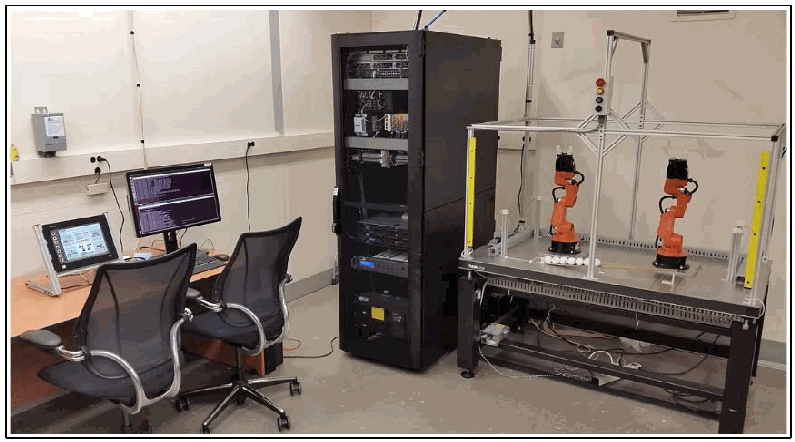

NIST IR 8177 日本語訳
英語タイトル : Metrics and Key Performance Indicators for Robotic Cybersecurity Performance Analysis日本語タイトル : ロボットのサイバーセキュリティ性能分析のためのメトリクスと重要業績評価指標
公開日 : 2019-05-21
原文URL : https://csrc.nist.gov/pubs/ir/8177/final
翻訳編集 : 自動生成（有志による非公式の日本語訳）, 原文取得日 : 2026-10-31, 訳文 : 210 / 211 ブロック
[要約] NIST IR 8177 は、NIST が構築した産業用制御システム（ICS）のテストベッドのうち、ロボットエンクレーブを対象とした報告書です。ロボットエンクレーブは、マシンテンディングと呼ばれる資材ハンドリング用途を模擬する 2 台のロボットアームで構成されています。エンクレーブでの研究は、業界のベストプラクティスや標準で定められたサイバーセキュリティ技術を導入した影響を調べ、性能への影響を測定するものです。本書は、ロボットエンクレーブの説明、メトリクスと KPI の選定、製造プロセス・ロボット・ネットワーク・プログラマブルロジックコントローラー・サーバーの性能の測定方法を扱います。
NISTIR 8177
NISTIR 8177
Metrics and Key Performance Indicators for Robotic Cybersecurity Performance Analysis
ロボットのサイバーセキュリティ性能分析のためのメトリクスと重要業績評価指標
Timothy A. Zimmerman
Timothy A. Zimmerman
This publication is available free of charge from: https://doi.org/10.6028/NIST.IR.8177
本刊行物は、次の場所から無料で入手できます: https://doi.org/10.6028/NIST.IR.8177
［NIST のロゴ。公的な標章のため、この非公式サイトには掲載していません。原本 PDF を参照してください。］
NISTIR 8177
NISTIR 8177
Metrics and Key Performance Indicators for Robotic Cybersecurity Performance Analysis
ロボットのサイバーセキュリティ性能分析のためのメトリクスと重要業績評価指標
Timothy A. Zimmerman
Intelligent Systems Division
Engineering Laboratory
Timothy A. Zimmerman
インテリジェントシステム部門
エンジニアリング研究所
This publication is available free of charge from: https://doi.org/10.6028/NIST.IR.8177
本刊行物は、次の場所から無料で入手できます: https://doi.org/10.6028/NIST.IR.8177
March 2017
2017年3月
INCLUDES UPDATES AS OF May 21, 2019
2019年5月21日時点の更新を含む
U.S. Department of Commerce Wilbur L. Ross, Jr., Secretary
米国商務省 Wilbur L. Ross, Jr. 長官
National Institute of Standards and Technology
国立標準技術研究所
Kent Rochford, Acting NIST Director and Under Secretary of Commerce for Standards and Technology
Kent Rochford、NIST 所長代理兼商務省標準・技術担当次官
CONTENTS
目次
Contents
目次
LIST OF FIGURES
図の一覧
LIST OF TABLES
表の一覧
Disclaimer
免責事項
Certain commercial entities, equipment, or materials may be identified in this document in order to describe an experimental procedure or concept adequately. Such identification is not intended to imply recommendation or endorsement by NIST, nor is it intended to imply that the entities, materials, or equipment are necessarily the best available for the purpose.
本書では、実験手順や概念を適切に説明するために、特定の商業的な事業体、機器、資材に言及している場合があります。そのような言及は、NIST による推奨や推薦を意味するものではなく、それらの事業体、資材、機器がその目的に利用可能なものの中で必ずしも最良であることを意味するものでもありません。
ERRATA
正誤表
This table contains changes that have been incorporated into NISTIR 8177. Errata updates can include corrections, clarifications, or other minor changes in the publication that are either editorial or substantive in nature.
この表は、NISTIR 8177 に反映された変更を示しています。正誤表の更新には、刊行物内の訂正、明確化、その他の軽微な変更が含まれることがあり、それらの性質は編集上のものか実質的なものです。
| Date | Type | Change | Page |
|---|---|---|---|
| 04-24-2019 | Editorial | General formatting. | All |
| 04-24-2019 | Substantive | Updated description for KPI 4.1 (Actuation Latency) in Table 4. | 9 |
| 04-24-2019 | Substantive | Added new KPI 4.6 (Job Execution Time) in Table 4. | 9 |
| 04-24-2019 | Substantive | Incorporated the original notes for Throughput Rate (KPI 2.3) into the general formulas and fixed a mathematical error. | 15 |
| 04-24-2019 | Substantive | Fixed variable terms for KPI 3.2 (Joint Setpoint). | 18 |
| 04-24-2019 | Substantive | Updated the description, formula, and notes for KPI 4.1 (Actuation Latency). | 19 |
| 04-24-2019 | Substantive | Updated the formula and notes for KPI 4.2 (Pose Travel Time). | 20 |
| 04-24-2019 | Editorial | Restructured formula layout for KPI 4.3 (Position Accuracy). | 20 |
| 04-24-2019 | Substantive | Added new KPI 4.6 (Job Execution Time). | 22 |
| 04-24-2019 | Substantive | Added bar accent to formula for KPI 6.6 to denote the calculation produces an average value. | 26 |
| 04-24-2019 | Substantive | Added bar accent to formula for KPI 6.7 to denote the calculation produces an average value. | 27 |
| 04-24-2019 | Substantive | Fixed error in formula for KPI 8.2 (CPU Utilization Distribution). | 29 |
| 04-24-2019 | Editorial | Fixed formatting error, separating tables for KPI 8.2 and KPI 9.1. | 30 |
| 日付 | 種別 | 変更内容 | ページ |
|---|---|---|---|
| 04-24-2019 | 編集上 | 全般的な書式の変更。 | すべて |
| 04-24-2019 | 実質的 | 表 4 の KPI 4.1（Actuation Latency）の説明を更新。 | 9 |
| 04-24-2019 | 実質的 | 表 4 に新しい KPI 4.6（Job Execution Time）を追加。 | 9 |
| 04-24-2019 | 実質的 | Throughput Rate（KPI 2 | 15 |
| 04-24-2019 | 実質的 | KPI 3.2（Joint Setpoint）の変数の項を修正。 | 18 |
| 04-24-2019 | 実質的 | KPI 4.1（Actuation Latency）の説明、数式、注記を更新。 | 19 |
| 04-24-2019 | 実質的 | KPI 4.2（Pose Travel Time）の数式と注記を更新。 | 20 |
| 04-24-2019 | 編集上 | KPI 4.3（Position Accuracy）の数式のレイアウトを再構成。 | 20 |
| 04-24-2019 | 実質的 | 新しい KPI 4.6（Job Execution Time）を追加。 | 22 |
| 04-24-2019 | 実質的 | 計算によって平均値が得られることを示すため、KPI 6.6 の数式にバーのアクセントを追加。 | 26 |
| 04-24-2019 | 実質的 | 計算によって平均値が得られることを示すため、KPI 6.7 の数式にバーのアクセントを追加。 | 27 |
| 04-24-2019 | 実質的 | KPI 8.2（CPU Utilization Distribution）の数式の誤りを修正。 | 29 |
| 04-24-2019 | 編集上 | KPI 8.2 と KPI 9.1 の表を分離し、書式の誤りを修正。 | 30 |
1 INTRODUCTION
1 はじめに
The National Institute of Standards and Technology has constructed a testbed to measure the performance impact induced by cybersecurity technologies on Industrial Control Systems (ICS) [1]. The testbed allows researchers to emulate real-world industrial manufacturing processes and their control systems without the need to replicate an entire factory environment or its machinery.
国立標準技術研究所は、産業用制御システム（ICS）に対してサイバーセキュリティ技術が引き起こす性能への影響を測定するためのテストベッドを構築しました [1]。このテストベッドにより、研究者は、工場全体の環境や機械設備を再現することなく、実世界の産業製造プロセスとその制御システムを模擬できます。
The focus of this report is the Robotic Enclave of the testbed, which is comprised of two robotic arms that emulate a material handling application, known as “machine tending.” Robotic machine tending uses robots to interact with the machinery, performing operations a human operator would normally perform (e.g., the loading and unloading of parts, opening and closing of machine doors, activating operator control panel buttons). In the enclave, parts are transported collaboratively through simulated sequential machining operations, known as “stations.” The enclave was designed and constructed to be reconfigurable, allowing numerous types of operational methodologies, network topologies, and industrial networking protocols to be investigated.
本報告書が焦点を当てるのは、テストベッドのロボットエンクレーブです。これは、「マシンテンディング」と呼ばれる資材ハンドリング用途を模擬する 2 台のロボットアームで構成されています。ロボットによるマシンテンディングでは、ロボットを使って機械設備とやり取りし、人間のオペレーターが通常行う作業（たとえば、部品の取り付けと取り外し、機械の扉の開閉、オペレーター用制御盤のボタンの操作）を行います。エンクレーブでは、部品は「ステーション」と呼ばれる、模擬的な一連の機械加工作業の間を、協調して搬送されます。エンクレーブは、再構成可能に設計・構築されており、さまざまな種類の運用方法、ネットワークトポロジー、産業用ネットワークプロトコルを調査できます。
The research performed on the enclave will explore the effects of implementing cybersecurity technologies, as defined by industry best-practices and standards, on the testbed operation and measure the performance impact. As later sections will elaborate, the impact will be measured simultaneously across many of the enclave subsystems during an experiment to provide a holistic understanding of the underlying effects of the defenses.
エンクレーブで行う研究では、業界のベストプラクティスや標準で定められたサイバーセキュリティ技術を導入することがテストベッドの動作に及ぼす影響を調べ、性能への影響を測定します。後のセクションで詳しく述べるように、防御策の根本的な影響を総合的に理解するため、その影響は、実験中にエンクレーブの多くのサブシステムにわたって同時に測定されます。
This report identifies the metrics, Key Performance Indicators (KPI), their derivations, and the measurement methodologies that will be employed during future enclave experiments.
本報告書は、今後のエンクレーブでの実験で用いられるメトリクス、重要業績評価指標（KPI）、それらの導出、および測定方法を明らかにします。
2 ROBOTIC ENCLAVE
2 ロボットエンクレーブ
The Robotic Enclave, shown in Figure 1, is one of four enclaves within the Cybersecurity for Smart Manufacturing Systems (CSMS) testbed. It includes two robotic arms that emulate a machine tending application, where parts are loaded, unloaded, and transported between sequential machining operations in a simulated batch-production process.
図 1 に示すロボットエンクレーブは、Cybersecurity for Smart Manufacturing Systems（CSMS）テストベッド内の 4 つのエンクレーブの 1 つです。これには、マシンテンディング用途を模擬する 2 台のロボットアームが含まれ、模擬的なバッチ生産プロセスにおいて、部品の取り付け、取り外し、および一連の機械加工作業間の搬送が行われます。
The robots operate in concert according to a material handling procedure that changes dynamically based on feedback from the simulated machining operations. In addition to the two industrial robots, the enclave includes a supervisory programmable logic controller (PLC), a safety PLC, a human machine interface (HMI), a real-time vision tracking system, several servers for executing required computational resources and applications, and an engineering workstation.
ロボットは、模擬的な機械加工作業からのフィードバックに基づいて動的に変化する資材ハンドリング手順に従って、協調して動作します。エンクレーブには、2 台の産業用ロボットに加えて、監視用のプログラマブルロジックコントローラー（PLC）、安全用 PLC、ヒューマンマシンインターフェース（HMI）、リアルタイムのビジョントラッキングシステム、必要な計算資源とアプリケーションを実行するための複数のサーバー、およびエンジニアリングワークステーションが含まれます。
Figure 1 - View of the robotic enclave and its components
図 1 - ロボットエンクレーブとその構成要素の外観

ロボット・エンクレーブの写真です。左に、タッチパネル、2台のモニター、2脚の事務椅子がある机があります。中央に、サーバーとネットワーク機器を収めた黒いラックがあります。右に、アルミのフレームと黄色のライトカーテンで囲まれた台があり、小さなオレンジ色のロボットアーム2台と、白い部品の列が置かれています。
2.1 SERVER OPERATIONS
2.1 サーバーの運用
The robot controllers can operate in one of two modes: deployed or virtualized. In the deployed mode, each robot is controlled on a dedicated Dell PowerEdge R420 server running the Robot Operating System (ROS) on top of Ubuntu Linux. In the virtualized mode, each robot is controlled by virtualized servers within a hypervisor running on a Dell PowerEdge 620 server. The deployed mode supports experiments with a pseudo-ideal configuration, and the virtualized mode supports experiments with a resource-restricted configuration, as well as the ability to maintain independent testing environments.
ロボットコントローラーは、展開モードと仮想化モードのいずれかで動作できます。展開モードでは、各ロボットは、Ubuntu Linux 上で Robot Operating System（ROS）を実行する専用の Dell PowerEdge R420 サーバーで制御されます。仮想化モードでは、各ロボットは、Dell PowerEdge 620 サーバー上で動作するハイパーバイザー内の仮想化サーバーによって制御されます。展開モードは、疑似理想的な構成での実験を支え、仮想化モードは、資源を制限した構成での実験と、独立したテスト環境を維持する能力を支えます。
The pseudo-ideal configuration provides the robot controller software with computational resources well-beyond the minimum requirements for unimpeded operations. Operating in this manner is reserved for experiments that do not require server performance impacts to be measured (e.g., network-specific experiments). The resource-restricted configuration allows the researchers to restrict the available resources to the robot controller software and underlying operating system (e.g., memory allocation, available hard disk space, hard disk access rates, number of central processing unit (CPU) cores).
疑似理想的な構成では、ロボットコントローラーのソフトウェアに、妨げのない動作に必要な最小要件をはるかに上回る計算資源を提供します。この方法での動作は、サーバーの性能への影響を測定する必要のない実験（たとえば、ネットワーク特有の実験）のために確保されています。資源を制限した構成では、研究者は、ロボットコントローラーのソフトウェアと基盤となるオペレーティングシステムで利用できる資源（たとえば、メモリ割り当て、利用可能なハードディスク容量、ハードディスクへのアクセス速度、中央処理装置（CPU）のコア数）を制限できます。
The hypervisor also allows software-based cybersecurity tools to be deployed within an isolated environment for testing and the ability to restore the enclave environment to a known-good state, reducing the chances of cross-contamination by residual software modules or services remaining within a virtual machine post-experiment. Software-based cybersecurity tools are installed on virtual machines dedicated to specific experiments within the hypervisor, and archived. This allows any tool to be recalled for any experiment that requires its execution.
ハイパーバイザーはまた、ソフトウェアベースのサイバーセキュリティツールを、テスト用の隔離された環境に展開できるようにし、エンクレーブの環境を既知の正常な状態に復元できるようにするため、実験後に仮想マシン内に残った残留ソフトウェアモジュールやサービスによる相互汚染の可能性を減らします。ソフトウェアベースのサイバーセキュリティツールは、ハイパーバイザー内の特定の実験専用の仮想マシンにインストールされ、アーカイブされます。これにより、その実行を必要とする実験があれば、どのツールでも呼び出すことができます。
2.2 EMULATED MANUFACTURING OPERATION
2.2 模擬製造作業
The sequential machining operations emulated by the enclave are shown in Figure 2. The robots work collaboratively to move the parts between the successive stations. Each station is physically constructed from an additive manufactured base with a concave recess to capture the parts, and an integrated proximity sensor. The parts transported between the stations are acetal resin spheres, 38 mm (1.5 inch) in diameter.
エンクレーブが模擬する一連の機械加工作業を図 2 に示します。ロボットは協調して、連続するステーション間で部品を移動させます。各ステーションは、部品を受け止める凹状のくぼみと、一体型の近接センサーを備えた、積層造形による土台から物理的に構成されています。ステーション間で搬送される部品は、直径 38 mm（1.5 インチ）のアセタール樹脂の球です。
Figure 2 - Flow chart of the emulated manufacturing process
図 2 - 模擬製造プロセスのフローチャート
左から右へ並ぶ5つの矢羽形の流れ図です。「原材料」「ステーション1：切断」「ステーション2：旋削」「ステーション3：仕上げ」「ステーション4：検査」の順です。
The machining operations of each station are emulated as configurable timers within the supervisory PLC (Beckhoff CX9020) with three operational states: “idle,” “processing,” and “ready for pickup.” A station is in the “idle” state when no part is present, the “processing” state when a part is present and the timer has not reached its set duration, and the “ready for pickup” state when a part is present and the timer has reached its set duration. The status information for each machining station is made available to other network devices (e.g., robot controllers, HMI) via a Modbus TCP server on the PLC.
各ステーションの機械加工作業は、監視用 PLC（Beckhoff CX9020）内の設定可能なタイマーとして模擬され、「待機」、「処理中」、「取り出し待ち」の 3 つの動作状態があります。ステーションは、部品がないときは「待機」状態、部品があり、タイマーが設定された時間に達していないときは「処理中」状態、部品があり、タイマーが設定された時間に達したときは「取り出し待ち」状態になります。各機械加工ステーションの状態情報は、PLC 上の Modbus TCP サーバーを介して、他のネットワークデバイス（たとえば、ロボットコントローラー、HMI）が利用できるようになっています。
2.3 NETWORK ARCHITECTURE
2.3 ネットワークアーキテクチャ
The enclave local area network (ICS LAN) is constructed as a flat architecture, as shown in Figure 3. For the initial experimentation, the architecture will remain flat (as this is most prevalent in industry). However, the reconfigurable design of the enclave will enable the implementation of network segmentation and security perimeters during future experiments. The local network traffic (“ICS LAN”) is managed by a Siemens RUGGEDCOM RX1510, and the high-level testbed traffic (“Testbed LAN”) and its connection to the “Corporate Network” are managed by a Cisco ASA 5512-X.
エンクレーブのローカルエリアネットワーク（ICS LAN）は、図 3 に示すように、フラットなアーキテクチャで構築されています。最初の実験では、（産業界で最も一般的であるため）アーキテクチャはフラットなままとします。ただし、エンクレーブは再構成可能に設計されているため、今後の実験でネットワークセグメンテーションとセキュリティ境界を実装できます。ローカルネットワークのトラフィック（「ICS LAN」）は Siemens RUGGEDCOM RX1510 で管理され、上位のテストベッドのトラフィック（「Testbed LAN」）と、「Corporate Network」への接続は Cisco ASA 5512-X で管理されます。
The Testbed LAN has three machines: a probe server, source control management (SCM) server, and Network Time Protocol (NTP) and Precision Time Protocol (PTP) capable master clock. The probe server (“ORION”) consumes and records network traffic from twelve independent network interfaces. The SCM server (“RIGEL”) runs a GitLab server to track and maintain the code used on the enclave, primarily robot code, PLC code, and analysis tools. The NTP/PTP clock (“GEORGE”) provides stable time to the enclave servers and systems to enable synchronized logging.
Testbed LAN には、プローブサーバー、ソース管理（SCM）サーバー、そして Network Time Protocol（NTP）と Precision Time Protocol（PTP）に対応したマスタークロックの 3 台のマシンがあります。プローブサーバー（「ORION」）は、12 の独立したネットワークインターフェースからのネットワークトラフィックを取り込み、記録します。SCM サーバー（「RIGEL」）は、GitLab サーバーを実行し、エンクレーブで使用されるコード（主にロボットのコード、PLC のコード、分析ツール）を追跡・保守します。NTP/PTP クロック（「GEORGE」）は、エンクレーブのサーバーとシステムに安定した時刻を提供し、同期されたログ記録を可能にします。
The ICS LAN has numerous machines that directly operate and support the operation of the enclave. The robot controller/driver servers (“MINTAKA”, “SAIPH”) execute the operational code and communicate directly with the robots to direct their actions. The supervisory PLC (“GIZMO”) communicates the status of the machining stations and operator controls to the robot controllers, as well as part tracking for manufacturing performance measurements. The operator HMI also communicates with the PLC to display manufacturing process information and performance measurements to the operator. The engineering workstation (“POLARIS”) hosts the programming environment and debugging tools used to modify the robot code, and give terminal-level access to other machines within the enclave. The HyperV server (“MEISSA”) provides server virtualization to the enclave, allowing researchers to create servers on-demand, as required by specific software tools or packages.
ICS LAN には、エンクレーブを直接動作させ、その動作を支える多数のマシンがあります。ロボットコントローラー／ドライバーサーバー（「MINTAKA」、「SAIPH」）は、動作コードを実行し、ロボットと直接通信して、その動作を指示します。監視用 PLC（「GIZMO」）は、機械加工ステーションとオペレーター用制御の状態を、ロボットコントローラーに伝えるとともに、製造性能の測定のための部品追跡も行います。オペレーター用 HMI も PLC と通信し、製造プロセスの情報と性能の測定結果をオペレーターに表示します。エンジニアリングワークステーション（「POLARIS」）は、ロボットのコードの修正に使うプログラミング環境とデバッグツールをホストし、エンクレーブ内の他のマシンへのターミナルレベルのアクセスを提供します。HyperV サーバー（「MEISSA」）は、エンクレーブにサーバー仮想化を提供し、特定のソフトウェアツールやパッケージで必要とされるサーバーを、研究者がオンデマンドで作成できるようにします。
Network probes within the enclave intercept network traffic at key points and mirror the traffic to the measurement enclave via a patch panel. Within the measurement enclave, packets can be captured, manipulated, and logged using a collection of network testing hardware and software.
エンクレーブ内のネットワークプローブは、主要なポイントでネットワークトラフィックを傍受し、パッチパネルを介してそのトラフィックを測定エンクレーブにミラーリングします。測定エンクレーブ内では、一連のネットワークテスト用のハードウェアとソフトウェアを使って、パケットをキャプチャ、操作、記録できます。
Figure 3 - Diagram of the network architecture and its components
図 3 - ネットワークアーキテクチャとその構成要素の図
![Network architecture diagram. A "Testbed LAN" bus connects the Probe Server (ORION, Dell PowerEdge R620), the SCM Server (RIGEL, Dell PowerEdge R420), the NTP/PTP Clock (GEORGE, Meinberg LANTIME M900), the Testbed Layer 2 Switch (Siemens RSG2288) and the Corporate Router/Firewall (Cisco ASA 5512-X), which connects to the "Corporate Network" cloud. An "ICS LAN" bus connects, through the ICS LAN Router (Siemens RX1510) and the Enclave Layer 2 Switch (Netgear GS724T), the Engineering Workstation (POLARIS, Dell Precision T5610), the Supervisory PLC (GIZMO, Beckhoff CX9020), HyperV Management, the HyperV Server (MEISSA, Dell PowerEdge R620), the Robot Driver (MINTAKA, Dell PowerEdge R420, KUKA youBots) and the Robot Controller (SAIPH, Dell PowerEdge R420) with two robot arms, and the Operator HMI (SAURON, RedLion G310).](assets/ir-8177/p0009-figure-01.png)
ネットワーク構成図です。「Testbed LAN」の線に、プローブサーバー（ORION、Dell PowerEdge R620）、SCM サーバー（RIGEL、Dell PowerEdge R420）、NTP/PTP クロック（GEORGE、Meinberg LANTIME M900）、テストベッドのレイヤー2スイッチ（Siemens RSG2288）、企業ネットワークのルーター／ファイアウォール（Cisco ASA 5512-X）がつながり、ファイアウォールは「Corporate Network」の雲につながります。「ICS LAN」の線には、ICS LAN ルーター（Siemens RX1510）とエンクレーブのレイヤー2スイッチ（Netgear GS724T）を介して、エンジニアリングワークステーション（POLARIS、Dell Precision T5610）、監視用 PLC（GIZMO、Beckhoff CX9020）、HyperV 管理端末、HyperV サーバー（MEISSA、Dell PowerEdge R620）、ロボットドライバー（MINTAKA、Dell PowerEdge R420、KUKA youBots）、ロボットコントローラー（SAIPH、Dell PowerEdge R420）と2台のロボットアーム、オペレーター HMI（SAURON、RedLion G310）がつながります。
2.4 PROCESS OPERATIONS AND DATA FLOW
2.4 プロセスの運用とデータフロー
Figure 4 illustrates the data flow of the processes and components within the enclave. All operations are initiated by the PLC, which monitors the operator buttons, HMI, and safety systems. The robots will commence their material handling operations only when the PLC informs the robot controllers that it is safe to do so. This communication is enabled by a Modbus TCP server in the PLC, which the robot controllers can access directly via Modbus TCP polling. The Modbus server provides the controllers with the current operating state of the enclave, the status of each operator button and switch, and the status of each machining station.
図 4 は、エンクレーブ内のプロセスと構成要素のデータフローを示しています。すべての動作は、オペレーター用ボタン、HMI、安全システムを監視する PLC によって開始されます。ロボットは、PLC がロボットコントローラーに安全であることを通知した場合にのみ、資材ハンドリング作業を開始します。この通信は、PLC 内の Modbus TCP サーバーによって実現され、ロボットコントローラーは、Modbus TCP のポーリングによってこれに直接アクセスできます。Modbus サーバーは、コントローラーに、エンクレーブの現在の動作状態、各オペレーター用ボタンとスイッチの状態、各機械加工ステーションの状態を提供します。
Figure 4 - Data flow diagram
図 4 - データフロー図
![Data flow diagram. Legend: red = EtherCAT, green = Modbus TCP, yellow = TCP (ROS Msg), purple = Digital I/O. On the left, "Robot 1 Driver", "Robot 1 Controller", "Robot 2 Controller" and "Robot 2 Driver" are stacked; the controllers exchange data with their drivers (yellow) and with the "PLC Supervisor" (green), which also connects to the "HMI" (green), receives "Sensors" (purple) and "Operator Controls" (purple). Red EtherCAT lines run from each robot driver to its robot arm in the "Robotic Enclave", which shows stations 1–4 and the "QUEUE".](assets/ir-8177/p0010-figure-01.png)
データの流れの図です。凡例は、赤が EtherCAT、緑が Modbus TCP、黄が TCP（ROS メッセージ）、紫がデジタル I/O です。左に「Robot 1 Driver」「Robot 1 Controller」「Robot 2 Controller」「Robot 2 Driver」が縦に並びます。各コントローラーはドライバーと（黄）、また「PLC Supervisor」と（緑）データをやり取りします。PLC Supervisor は「HMI」とも（緑）つながり、「Sensors」と「Operator Controls」から入力（紫）を受けます。各ロボットドライバーから「Robotic Enclave」内のロボットアームへ赤の EtherCAT の線が伸びます。エンクレーブには1～4のステーションと「QUEUE」が描かれています。
While a robot is idle, the controller will continue polling the Modbus Service to obtain the operating status of each machining station. This status information is passed through decision logic within the robot controller to determine what actions the robot should perform, based on the given machining station states. Once the controller logic determines which action should be executed, the arm will move through a series of predetermined poses and actions to complete the intended operation.
ロボットが待機している間、コントローラーは Modbus サービスのポーリングを続け、各機械加工ステーションの動作状態を取得します。この状態情報は、ロボットコントローラー内の判断ロジックに渡され、与えられた機械加工ステーションの状態に基づいて、ロボットがどの動作を行うべきかが決定されます。コントローラーのロジックがどの動作を実行すべきかを決定すると、アームは、あらかじめ決められた一連のポーズと動作を経て、意図された作業を完了します。
The predetermined poses and actions are described in a Yet Another Markup Language (YAML) file, which defines each discrete joint position or action (e.g., open/close the jaw) the arm should sequentially execute to complete the movement. For example, if Station #1 reports a part is ready for pickup, Robot #1’s controller will check to see if there is a part at Station #2. If Station #2 is empty, the robot controller will execute the required set of actions to move the part from Station #1 to Station #2. The controller will continue executing each discrete action within the set until it has completed. At this point, the controller will return the robot to its idle position and continue scanning the machining stations until a new event triggers another movement to be performed (e.g., move a part from the raw material queue to the now empty Station #1).
あらかじめ決められたポーズと動作は、Yet Another Markup Language（YAML）ファイルに記述されており、このファイルは、動きを完了するためにアームが順に実行すべき個々の関節位置や動作（たとえば、ジョーの開閉）を定義します。たとえば、ステーション 1 が部品の取り出し準備ができたと報告した場合、ロボット 1 のコントローラーは、ステーション 2 に部品があるかどうかを確認します。ステーション 2 が空であれば、ロボットコントローラーは、ステーション 1 からステーション 2 に部品を移動させるために必要な一連の動作を実行します。コントローラーは、その一連の動作の中の個々の動作を、完了するまで実行し続けます。この時点で、コントローラーはロボットを待機位置に戻し、新しいイベントが別の動作の実行を引き起こす（たとえば、原材料の待ち行列から、いまは空になったステーション 1 に部品を移動させる）まで、機械加工ステーションの走査を続けます。
Parts will continue moving through the machining stations as long as there is raw material on the queue, and the experiment termination triggers within the HMI are not achieved. Experiment termination triggers available can be either part-counter based, or timer-based. Once a trigger is activated, the enclave will enter the “stop” state and allow the robots to complete their current movements before ceasing all operations.
待ち行列に原材料があり、HMI 内の実験終了トリガーが達成されていない限り、部品は機械加工ステーションを通って移動し続けます。利用できる実験終了トリガーは、部品カウンターに基づくものか、タイマーに基づくもののいずれかです。トリガーが作動すると、エンクレーブは「停止」状態に入り、ロボットが現在の動きを完了してから、すべての動作を停止できるようにします。
The control of each robot joint is performed with a cascaded control architecture. Closed-loop proportional-integral-derivative (PID) position control is performed by the motor controllers for each joint. The enclave also has the capability to control the robot joints in a velocity control mode, where the PID position control is performed by the robot controllers, and velocity updates are sent over the network.
各ロボット関節の制御は、カスケード制御アーキテクチャで行われます。各関節のモーターコントローラーが、閉ループの比例・積分・微分（PID）位置制御を行います。エンクレーブはまた、ロボットの関節を速度制御モードで制御する能力も備えており、この場合、PID 位置制御はロボットコントローラーが行い、速度の更新値がネットワーク経由で送信されます。
Because of the reconfigurable nature of the enclave, the hosts of the robot controller processes are excluded from Figure 4. However, in the deployed mode, the robot controller processes typically execute on SAIPH, with the driver processes executing on MINTAKA.
エンクレーブは再構成可能な性質を持つため、ロボットコントローラーのプロセスのホストは図 4 から除外されています。ただし、展開モードでは、ロボットコントローラーのプロセスは通常 SAIPH 上で実行され、ドライバーのプロセスは MINTAKA 上で実行されます。
3 METRICS AND KPI
3 メトリクスと KPI
The research and selection of enclave metrics and KPI were driven by the experimental goal: to capture empirical evidence of performance impacts induced by cybersecurity protections (e.g., hardware, software, implementation of industry best-practices). Measurements of the manufacturing operation are captured and compared to those captured during baseline experiments. Statistical analysis will provide a method of detecting deviations from the expected behavior of the manufacturing process, although it is not the focus of this report.
エンクレーブのメトリクスと KPI の調査と選定は、サイバーセキュリティ上の保護（たとえば、ハードウェア、ソフトウェア、業界のベストプラクティスの実装）が引き起こす性能への影響について、実証的な証拠を取得するという実験の目標に基づいて行われました。製造作業の測定値を取得し、ベースライン実験中に取得した測定値と比較します。統計分析は、製造プロセスの期待される挙動からの逸脱を検出する方法となりますが、これは本報告書の焦点ではありません。
The deviation of a specific measurement from the baseline will not directly identify the underlying cause. To resolve this, measurements from the subsystems that support the manufacturing operation are also captured. Simultaneously measuring at the manufacturing-level and subsystem-level enables analysis of the performance impact to the manufacturing operation, as well as the underlying subsystems and their interactions. In the robotic enclave, the high-level system is the discrete manufacturing operation, and supporting the operation are the enclave subsystems (e.g., servers, PLC, HMI, network equipment).
特定の測定値のベースラインからの逸脱は、その根本原因を直接特定するものではありません。これを解決するために、製造作業を支えるサブシステムからの測定値も取得します。製造レベルとサブシステムレベルで同時に測定することで、製造作業への性能の影響のほか、基盤となるサブシステムとそれらの相互作用への性能の影響を分析できます。ロボットエンクレーブでは、上位のシステムは離散型の製造作業であり、その作業を支えているのがエンクレーブのサブシステム（たとえば、サーバー、PLC、HMI、ネットワーク機器）です。
For an example of the interactions between the manufacturing process and underlying subsystems, consider a hypothetical manufacturing operation where an operator must regularly inspect the output product and manipulate machine variables via an HMI to keep the parts free of defects. The proposed cybersecurity protection to be implemented is “requiring a password on the HMI to prevent unauthorized users from manipulating the machine variables.” If the machine in question produces products at a rate of 10 parts per hour, and it takes the operator an extra 5 seconds to unlock the HMI, the performance impact to the manufacturing process will be negligible. However, if the machine operates at high-speeds, with production rates measured in parts per second, requiring the operator to regularly spend an additional 5 seconds to unlock the HMI and adjust the machine variables will cause performance impacts to the output production rate.
製造プロセスと基盤となるサブシステムとの相互作用の例として、オペレーターが、部品に欠陥が生じないよう、出力された製品を定期的に検査し、HMI を介して機械の変数を操作しなければならない、仮想の製造作業を考えます。実装が提案されているサイバーセキュリティ上の保護は、「許可されていないユーザーが機械の変数を操作することを防ぐために、HMI にパスワードを要求する」というものです。対象の機械が 1 時間あたり 10 個の部品を生産する速度で製品を作っており、オペレーターが HMI のロック解除に余分に 5 秒かかる場合、製造プロセスへの性能の影響は無視できる程度です。しかし、機械が高速で動作し、生産速度が 1 秒あたりの部品数で測られるほどであれば、オペレーターが HMI のロック解除と機械の変数の調整のために定期的に余分な 5 秒を費やす必要があることは、出力の生産速度に性能の影響を及ぼします。
3.1 TERMINOLOGY
3.1 用語
This report uses a naming convention that follows terminology to enable effective communications between researchers and industry, as proposed in [2]. More specifically, this report defines a metric as a “directly measurable property of a system,” while a KPI is defined as a “computable performance assessment, as derived from a combination of metrics.” Metrics are analogous to primitives, while KPIs are a form of post-analysis which utilize the primitives to compute an inference. For comparison, ISO 22400-1:2014 defines the measurements used in the calculation of KPIs as “elements.”
本報告書は、研究者と業界との間の効果的なコミュニケーションを可能にするために [2] で提案された用語に従う命名規則を使用します。より具体的には、本報告書では、メトリクスを「システムの直接測定可能な特性」と定義し、KPI を「メトリクスの組み合わせから導出される、計算可能な性能評価」と定義します。メトリクスはプリミティブに相当し、KPI は、そのプリミティブを利用して推論を計算する、事後分析の一形態です。比較のために、ISO 22400-1:2014 は、KPI の計算に用いる測定値を「要素（elements）」と定義しています。
Using the robotic enclave as an example, consider the following two metrics: the amount of time a single machining station is performing work on parts during a batch, and the total amount of time required to produce the batch. Both are directly measurable, and are considered metrics. However, effective communication of either metric proves problematic when comparing to systems with differing dynamics (i.e., an enclave with four machining stations compared to six machining stations). This is resolved by combining individual metrics within a computation to calculate a KPI. Continuing with the previous example, the machining station working time and total batch production time can be used to calculate the “Utilization Efficiency” of the station (see KPI 2.4 in Section 4.1), which can be directly communicated and compared to other systems.
ロボットエンクレーブを例にすると、次の 2 つのメトリクスを考えます。バッチの間に 1 つの機械加工ステーションが部品に対して作業を行っている時間と、バッチの生産に必要な合計時間です。どちらも直接測定可能であり、メトリクスとみなされます。しかし、どちらのメトリクスも、異なる動特性を持つシステム（たとえば、機械加工ステーションが 4 つあるエンクレーブと 6 つあるエンクレーブ）と比較する際には、効果的に伝えることが困難です。これは、個々のメトリクスを計算の中で組み合わせて、KPI を算出することで解決されます。先ほどの例を続けると、機械加工ステーションの作業時間とバッチの合計生産時間を使って、そのステーションの「稼働効率（Utilization Efficiency）」（セクション 4.1 の KPI 2.4 を参照）を計算でき、これを他のシステムと直接伝え、比較できます。
3.2 SELECTION PROCESS
3.2 選定プロセス
The manufacturing process and various subsystems operating within the enclave were examined to determine which metrics could be obtained. Literature related to the performance of manufacturing systems and other industry standards were then reviewed to determine which KPI could be used to best analyze the manufacturing process with the available metrics. The literature in [3], [4], [5], [6], and [7] proved most helpful by providing insight into some of the more elusive KPI for the testbed subsystems. KPIs that did not provide results related to the research goal were not considered.
どのメトリクスを取得できるかを判断するために、エンクレーブ内で動作する製造プロセスと各種サブシステムを調べました。次に、利用可能なメトリクスで製造プロセスを最もよく分析できる KPI を判断するために、製造システムの性能に関する文献やその他の業界標準を確認しました。[3]、[4]、[5]、[6]、[7] の文献は、テストベッドのサブシステムに関する、より捉えにくい KPI のいくつかについて知見を与えてくれ、最も役立つことがわかりました。研究目標に関連する結果が得られない KPI は、検討対象としませんでした。
4 MEASUREMENT METHODOLOGIES
4 測定方法
To detect and measure performance impacts to the manufacturing system, specific metrics from the manufacturing process, robots, local network, PLC, and servers are captured. These metrics are then used to calculate KPIs to provide quantifiable and communicable indicators, and detect any performance impacts. If any impacts are detected, more detailed analysis can be performed to assist with locating the source of the performance degradation.
製造システムへの性能の影響を検出し測定するために、製造プロセス、ロボット、ローカルネットワーク、PLC、サーバーからの特定のメトリクスを取得します。これらのメトリクスを使って KPI を計算し、定量化でき伝達可能な指標を提供し、性能への影響を検出します。何らかの影響が検出された場合は、性能低下の原因の特定に役立つよう、より詳細な分析を実施できます。
The following sections describe the measurement methodology used for each process and subsystem, as well a summary of the metrics and KPIs. Detailed descriptions and formulas for each metric and KPI are located in Appendix A – Description of Measurements and KPI.
以下のセクションでは、各プロセスとサブシステムに用いる測定方法を、メトリクスと KPI の概要とともに説明します。各メトリクスと KPI の詳細な説明と数式は、付録 A – 測定値と KPI の説明にあります。
4.1 MANUFACTURING PROCESS PERFORMANCE
4.1 製造プロセスの性能
For each batch produced, the PLC captures all the metrics listed in Table 1. Arrival and departure timestamps for each station are stored in a multidimensional array, and the station counters are implemented as primitive variables. When the production process is started, the PLC will log the start time obtained from the grandmaster NTP clock (labeled GEORGE in Figure 3). Once the experiment start time is logged, the PLC enables enclave operations: Modbus server registers are updated to inform all subsystems that operations are enabled, the counters begin incrementing, and the recording of each station event is enabled.
PLC は、生産された各バッチについて、表 1 に示すすべてのメトリクスを取得します。各ステーションへの到着と出発のタイムスタンプは、多次元配列に保存され、ステーションカウンターはプリミティブ変数として実装されています。生産プロセスが開始されると、PLC は、グランドマスター NTP クロック（図 3 では GEORGE と表記）から取得した開始時刻を記録します。実験開始時刻が記録されると、PLC はエンクレーブの動作を有効にします。Modbus サーバーのレジスタが更新されて、すべてのサブシステムに動作が有効になったことが通知され、カウンターがカウントアップを開始し、各ステーションのイベントの記録が有効になります。
Counters and event trackers are updated on every cycle of the PLC task, which is 10 ms at the time of writing. When a part enters or exits a station, a timestamp of the event is stored in the part tracking array, relative to the start of the batch. The PLC also captures the total amount of time each station spends in any valid state. The three valid states for a machining station are: busy, waiting, and idle. The busy state represents the time a station is actively machining a part. After machining has completed, the station enters the waiting state, and waits for a robot to remove the part. Once the part is removed from the station, it enters the idle state until a new part is loaded. Batch production time and the total number of parts produced are also tracked, as they are required for some of the KPI calculations.
カウンターとイベントトラッカーは、PLC タスクのサイクルごとに更新されます。このサイクルは、執筆時点では 10 ms です。部品がステーションに入る、またはステーションから出るとき、そのイベントのタイムスタンプが、バッチの開始からの相対時刻として、部品追跡配列に保存されます。PLC はまた、各ステーションが有効な状態のいずれかにある合計時間も取得します。機械加工ステーションの有効な状態は、ビジー、待機中、アイドルの 3 つです。ビジー状態は、ステーションが部品を実際に機械加工している時間を表します。機械加工が完了すると、ステーションは待機中状態に入り、ロボットが部品を取り出すのを待ちます。部品がステーションから取り出されると、新しい部品が取り付けられるまでアイドル状態に入ります。バッチの生産時間と生産された部品の総数も、一部の KPI の計算に必要なため、追跡されます。
When the enclave completes its production cycle, all process data remains within the PLC until it is downloaded and purged by an operator via the HMI. The KPIs, listed in Table 2, can be computed in real-time via the operator HMI, or offline after the experiment has been completed.
エンクレーブが生産サイクルを完了すると、すべてのプロセスデータは、オペレーターが HMI を介してダウンロードして消去するまで、PLC 内に残ります。表 2 に示す KPI は、オペレーター用 HMI でリアルタイムに計算することも、実験の完了後にオフラインで計算することもできます。
Table 1 - Manufacturing Process Metrics
表 1 - 製造プロセスのメトリクス
| Metric | Description |
|---|---|
| 1.1 Part Timestamps | Timestamping of unique part events (e.g., arriving and departing stations) |
| 1.2 Station Timers | Accumulation of time a station is in any valid state |
| 1.3 Batch Timer | Total amount of time required for the batch to be produced |
| 1.4 Batch Parts Counter | Number of parts produced in the batch |
| メトリクス | 説明 |
|---|---|
| 1.1 部品タイムスタンプ（Part Timestamps） | 固有の部品イベント（たとえば、ステーションへの到着と出発）のタイムスタンプ記録 |
| 1.2 ステーションタイマー（Station Timers） | ステーションが有効な状態のいずれかにある時間の累積 |
| 1.3 バッチタイマー（Batch Timer） | バッチの生産に必要な合計時間 |
| 1.4 バッチ部品カウンター（Batch Parts Counter） | バッチで生産された部品の数 |
Table 2 - Manufacturing Process KPI
表 2 - 製造プロセスの KPI
| Key Performance Indicator | Description |
|---|---|
| 2.1 Part Production Time | Amount of time required for a part to be produced |
| 2.2 Cycle Time | Amount of time between finished parts |
| 2.3 Throughput Rate | Number of parts produced over a specific amount of time |
| 2.4 Production Effectiveness | Relationship between the planned production time to complete a batch and the actual production time |
| 2.5 Station Allocation Ratio | Ratio between the amount of time a station was busy and the batch production time |
| 2.6 Station Utilization Efficiency | Ratio between the amount of time a station was producing and the amount of time the batch required to complete |
| 重要業績評価指標 | 説明 |
|---|---|
| 2.1 部品生産時間（Part Production Time） | 部品の生産に必要な時間 |
| 2.2 サイクルタイム（Cycle Time） | 完成した部品と部品との間の時間 |
| 2.3 スループット率（Throughput Rate） | 特定の時間内に生産された部品の数 |
| 2.4 生産有効性（Production Effectiveness） | バッチを完了するための計画生産時間と実際の生産時間との関係 |
| 2.5 ステーション割り当て比（Station Allocation Ratio） | ステーションがビジーだった時間とバッチの生産時間との比 |
| 2.6 ステーション稼働効率（Station Utilization Efficiency） | ステーションが生産を行っていた時間と、バッチの完了に要した時間との比 |
4.2 ROBOT PERFORMANCE
4.2 ロボットの性能
Robot performance metrics can be obtained by capturing the command and control communications used by the robots. Since the communication protocol used by the robots (EtherCAT) leverages existing Ethernet hardware, the packets can be captured directly from the physical interface, or with an in-line tool. Each packet contains all of the metrics shown in Table 3, and are transmitted at a rate of 700 Hz. This communication is the lowest-level that can be captured, as packets on this path go directly to each individual joint of the robots.
ロボットの性能メトリクスは、ロボットが使用するコマンド・制御通信をキャプチャすることで取得できます。ロボットが使用する通信プロトコル（EtherCAT）は既存のイーサネットハードウェアを活用しているため、パケットは、物理インターフェースから直接、またはインラインツールでキャプチャできます。各パケットには、表 3 に示すすべてのメトリクスが含まれ、700 Hz の速度で送信されます。この経路のパケットはロボットの個々の関節に直接届くため、この通信はキャプチャできる最も低レベルのものです。
Because of the huge amount of data being transmitted during a batch, capturing data on this interface is time-limited, and is typically reserved for experiments where robot performance impact is anticipated because of interim results obtained from more readily available metrics and KPIs.
バッチの間に送信されるデータの量が膨大であるため、このインターフェースでのデータのキャプチャには時間の制約があり、通常は、より容易に入手できるメトリクスや KPI から得られた中間結果により、ロボットの性能への影響が予想される実験のために確保されます。
When a capture of this interface is performed, all of the network traffic is logged through a Wireshark or tcpdump capture. The EtherCAT protocol data is then extracted from the packets offline by a custom Python dissector script.
このインターフェースのキャプチャを実行する場合、すべてのネットワークトラフィックが、Wireshark または tcpdump のキャプチャによって記録されます。その後、EtherCAT プロトコルのデータは、独自の Python ディセクタースクリプトによって、オフラインでパケットから抽出されます。
Table 3 - Robot Performance Metrics
表 3 - ロボット性能のメトリクス
| Metric | Description |
|---|---|
| 3.1 Joint Position | Position of each robot joint |
| 3.2 Joint Setpoint | Control setpoint of each robot joint |
| 3.3 Joint Velocity | Velocity of each robot joint |
| 3.4 Joint Current | Electrical current of each robot joint |
| 3.5 Joint Control Flags | Flags describing the operational status of each robot joint |
| メトリクス | 説明 |
|---|---|
| 3.1 関節位置（Joint Position） | 各ロボット関節の位置 |
| 3.2 関節設定値（Joint Setpoint） | 各ロボット関節の制御設定値 |
| 3.3 関節速度（Joint Velocity） | 各ロボット関節の速度 |
| 3.4 関節電流（Joint Current） | 各ロボット関節の電流 |
| 3.5 関節制御フラグ（Joint Control Flags） | 各ロボット関節の動作状態を示すフラグ |
Table 4 - Robot Performance KPI
表 4 - ロボット性能の KPI
| Key Performance Indicator | Description |
|---|---|
| 4.1 Actuation Latency | Amount of time required for the robot arm to begin movement after a new job is received |
| 4.2 Pose Travel Time | Amount of time for the robot arm to move between two poses |
| 4.3 Position Accuracy | Deviation between the commanded position and the measured position |
| 4.4 Position Repeatability | Closeness of agreement between the measured position after n repeat visits to the same commanded position |
| 4.5 Energy Consumption | Estimation of the amount of power consumed by the robot joint motors |
| 4.6 Job Execution Time | Amount of time required for a robot to complete a job |
| 重要業績評価指標 | 説明 |
|---|---|
| 4.1 作動レイテンシー（Actuation Latency） | 新しいジョブを受信してから、ロボットアームが動き始めるまでに必要な時間 |
| 4.2 ポーズ移動時間（Pose Travel Time） | ロボットアームが 2 つのポーズの間を移動する時間 |
| 4.3 位置精度（Position Accuracy） | 指令位置と測定位置との偏差 |
| 4.4 位置繰り返し精度（Position Repeatability） | 同じ指令位置を n 回繰り返し訪れた後の測定位置の一致の近さ |
| 4.5 エネルギー消費量（Energy Consumption） | ロボット関節のモーターが消費する電力量の推定値 |
| 4.6 ジョブ実行時間（Job Execution Time） | ロボットがジョブを完了するのに必要な時間 |
4.3 NETWORK PERFORMANCE
4.3 ネットワークの性能
The network capture server within the measurement enclave is tasked with capturing all transmitted packets within the local network. Each packet is stored in its raw format, allowing numerous metrics to be obtained. Key nodes within the enclave have their Ethernet communications passed through an in-line Ethernet network tap (USRobotics USR4503). The packets are aggregated and mirrored to the measurement rack, where they are captured by a Dell PowerEdge R620 containing two Broadcom 5719 network interface cards, adding eight dedicated Ethernet packet capture interfaces.
測定エンクレーブ内のネットワークキャプチャサーバーは、ローカルネットワーク内で送信されるすべてのパケットをキャプチャする役割を担います。各パケットは生の形式で保存されるため、多数のメトリクスを取得できます。エンクレーブ内の主要なノードのイーサネット通信は、インラインのイーサネットネットワークタップ（USRobotics USR4503）を通過します。パケットは集約されて測定ラックにミラーリングされ、2 枚の Broadcom 5719 ネットワークインターフェースカードを搭載した Dell PowerEdge R620 によってキャプチャされます。これにより、専用のイーサネットパケットキャプチャ用インターフェースが 8 つ追加されます。
A reconfigurable Python script and dissector were created to perform the capture and dissection processes. The script creates a dedicated tcpdump process for each Ethernet interface, as defined by the user in a configuration file, and stores captured packets in PCAP files. Dissection of ROS packets is performed using a Python script that contains the structures and signatures of known message types. The script can also automatically cease its measurements by listening for broadcast messages on the local network marking the end of an experiment.
キャプチャとディセクションのプロセスを実行するために、再構成可能な Python スクリプトとディセクターが作成されました。このスクリプトは、ユーザーが設定ファイルで定義したイーサネットインターフェースごとに専用の tcpdump プロセスを作成し、キャプチャしたパケットを PCAP ファイルに保存します。ROS パケットのディセクションは、既知のメッセージタイプの構造とシグネチャを含む Python スクリプトを使って行われます。このスクリプトは、実験の終了を示すブロードキャストメッセージをローカルネットワーク上で待ち受けることで、測定を自動的に停止することもできます。
Table 5 - Network Performance Metrics
表 5 - ネットワーク性能のメトリクス
| Metric | Description |
|---|---|
| 5.1 Packet Headers | Header data of a captured packet |
| 5.2 Packet Data | Application layer payload of a captured packet |
| 5.3 Packet Protocol Type | Protocol type of a captured packet |
| 5.4 Packet Timestamp | Timestamp of a captured packet |
| 5.5 Packet Size | Size of a packet in bytes |
| 5.6 Packet Errors | Number of packets transmitted or received with errors |
| 5.7 Dropped Packets | Number of packets dropped by the network |
| 5.8 Packet Counter | Number of packets transmitted and received |
| メトリクス | 説明 |
|---|---|
| 5.1 パケットヘッダー（Packet Headers） | キャプチャしたパケットのヘッダーデータ |
| 5.2 パケットデータ（Packet Data） | キャプチャしたパケットのアプリケーション層のペイロード |
| 5.3 パケットプロトコルタイプ（Packet Protocol Type） | キャプチャしたパケットのプロトコルタイプ |
| 5.4 パケットタイムスタンプ（Packet Timestamp） | キャプチャしたパケットのタイムスタンプ |
| 5.5 パケットサイズ（Packet Size） | パケットのサイズ（バイト単位） |
| 5.6 パケットエラー（Packet Errors） | エラーを伴って送信または受信されたパケットの数 |
| 5.7 破棄されたパケット（Dropped Packets） | ネットワークによって破棄されたパケットの数 |
| 5.8 パケットカウンター（Packet Counter） | 送信および受信されたパケットの数 |
Table 6 - Network Performance KPI
表 6 - ネットワーク性能の KPI
| Key Performance Indicator | Description |
|---|---|
| 6.1 Packet Path Delay | Time delay along the path from transmitter to receiver |
| 6.2 Inter-packet Delay | Difference between the packet path delay of two packets |
| 6.3 TCP Packet Round Trip Time | Amount of time for the source node of a packet to receive the acknowledgement of receipt (ACK) from the destination node |
| 6.4 Information Ratio | Ratio of the quantity of process information packets to all packets |
| 6.5 Bit Rate | Rate of bits transmitted or received over a specific timespan |
| 6.6 Packet Rate | Rate of packets transmitted and received over a specific amount of time |
| 6.7 Packet Error Rate | Rate of packets transmitted or received with errors over a specific amount of time |
| 6.8 Proportion of Protocol Type | Numerical proportion of a unique packet protocol type observed |
| 重要業績評価指標 | 説明 |
|---|---|
| 6.1 パケット経路遅延（Packet Path Delay） | 送信側から受信側までの経路に沿った時間遅延 |
| 6.2 パケット間遅延（Inter-packet Delay） | 2 つのパケットのパケット経路遅延の差 |
| 6.3 TCP パケットラウンドトリップタイム（TCP Packet Round Trip Time） | パケットの送信元ノードが、宛先ノードから受信確認応答（ACK）を受け取るまでの時間 |
| 6.4 情報比率（Information Ratio） | 処理情報パケットの量と、すべてのパケットの量との比 |
| 6.5 ビットレート（Bit Rate） | 特定の期間にわたって送信または受信されたビットの速度 |
| 6.6 パケットレート（Packet Rate） | 特定の時間内に送信および受信されたパケットの速度 |
| 6.7 パケットエラー率（Packet Error Rate） | 特定の時間内にエラーを伴って送信または受信されたパケットの割合 |
| 6.8 プロトコルタイプの割合（Proportion of Protocol Type） | 観測された個々のパケットプロトコルタイプの数値上の割合 |
4.4 PROGRAMMABLE LOGIC CONTROLLER PERFORMANCE
4.4 プログラマブルロジックコントローラーの性能
The PLC simulating the machining stations and communications with the robot controllers requires CPU resources to perform its required functions. Any performance impacts to the PLC operations will be evident through the recorded metrics described below in Table 7. In contrast to the PLC’s responsibilities described in Section 2.4, the KPIs in this section are related to the operational performance of the PLC itself, whereas the KPIs in Section 4.1 are related to the operational performance of the manufacturing process.
機械加工ステーションの模擬と、ロボットコントローラーとの通信を担う PLC は、必要な機能を実行するために CPU 資源を必要とします。PLC の動作への性能の影響は、以下の表 7 に示す記録されたメトリクスから明らかになります。セクション 2.4 で説明した PLC の役割とは対照的に、本セクションの KPI は PLC 自体の運用性能に関するものであり、セクション 4.1 の KPI は製造プロセスの運用性能に関するものです。
The TwinCAT TC3 Engineering module (which executes on the PLC) includes two library functions for capturing the metrics listed in Table 7: TC_CpuUsage, and FB_CxProfiler. The metrics from these two functions are recorded once every second while the experiment is running. All data is stored within the PLC until cleared by an operator via the HMI after the data has been downloaded.
TwinCAT TC3 Engineering モジュール（PLC 上で実行されます）には、表 7 に示すメトリクスを取得するための 2 つのライブラリ関数、TC_CpuUsage と FB_CxProfiler が含まれています。これら 2 つの関数のメトリクスは、実験の実行中に 1 秒に 1 回記録されます。すべてのデータは、ダウンロード後にオペレーターが HMI を介して消去するまで、PLC 内に保存されます。
Table 7 - PLC Performance Metrics
表 7 - PLC 性能のメトリクス
| Metric | Description |
|---|---|
| 7.1 Task Execution Time | Time required to complete the PLC task |
| 7.2 Minimum Task Execution Time | Minimum amount of time required to complete the PLC task |
| 7.3 Maximum Task Execution Time | Maximum amount of time required to complete the PLC task |
| 7.4 CPU Utilization | Amount of PLC CPU usage |
| 7.5 Maximum CPU Utilization | Maximum amount of PLC CPU usage |
| メトリクス | 説明 |
|---|---|
| 7.1 タスク実行時間（Task Execution Time） | PLC タスクの完了に必要な時間 |
| 7.2 最小タスク実行時間（Minimum Task Execution Time） | PLC タスクの完了に必要な最小時間 |
| 7.3 最大タスク実行時間（Maximum Task Execution Time） | PLC タスクの完了に必要な最大時間 |
| 7.4 CPU 使用率（CPU Utilization） | PLC の CPU 使用量 |
| 7.5 最大 CPU 使用率（Maximum CPU Utilization） | PLC の CPU 使用量の最大値 |
Table 8 - PLC Performance KPI
表 8 - PLC 性能の KPI
| Key Performance Indicator | Description |
|---|---|
| 8.1 Task Execution Time | Mean and standard deviation of PLC task execution time |
| 8.2 CPU Utilization | Mean and standard deviation of PLC CPU utilization |
| 重要業績評価指標 | 説明 |
|---|---|
| 8.1 タスク実行時間（Task Execution Time） | PLC タスク実行時間の平均値と標準偏差 |
| 8.2 CPU 使用率（CPU Utilization） | PLC の CPU 使用率の平均値と標準偏差 |
4.5 SERVER PERFORMANCE
4.5 サーバーの性能
The servers within the enclave require computing resources (e.g., CPU time, memory usage, disk usage) to perform their tasks during an experiment (e.g., robot control). To capture the performance of these resources, a Python application was created to capture and log the required metrics. All of the metrics are logged in comma-separated values files at a specified rate, which is defined by the researcher through command line arguments (the default rate is one sample per second).
エンクレーブ内のサーバーは、実験中にタスク（たとえば、ロボットの制御）を実行するために、計算資源（たとえば、CPU 時間、メモリ使用量、ディスク使用量）を必要とします。これらの資源の性能を取得するために、必要なメトリクスをキャプチャして記録する Python アプリケーションが作成されました。すべてのメトリクスは、研究者がコマンドライン引数で定義する指定の速度（デフォルトは 1 秒あたり 1 サンプル）で、CSV ファイルに記録されます。
To perform the capture, the researcher executes the script from the command line interface, along with required arguments, before the experiment is initiated. Once initiated, the script will continue capturing the metrics until it is stopped. The script can also automatically cease its measurements by listening for broadcast messages on the local network that indicate the end of an experiment.
キャプチャを実行するには、研究者は、実験を開始する前に、必要な引数とともにコマンドラインインターフェースからスクリプトを実行します。開始されると、スクリプトは、停止されるまでメトリクスのキャプチャを続けます。このスクリプトは、実験の終了を示すブロードキャストメッセージをローカルネットワーク上で待ち受けることで、測定を自動的に停止することもできます。
Although there is a separate measurement system capturing the network traffic of the enclave, it is important to note the inclusion of server-based network measurements (Metrics 9.7-9.10). Some of the cybersecurity tools used during experiments block traffic from the wire, before a packet has the chance to reach a server. Measuring at the server allows a comparison of traffic flow on the network to what is actually consumed and generated by a specific server. However, one important difference between the network capture and server performance measurements is the latter does not include raw packet data; only simple flow counters.
エンクレーブのネットワークトラフィックをキャプチャする別個の測定システムがあるものの、サーバーベースのネットワーク測定（メトリクス 9.7～9.10）が含まれている点に注意することが重要です。実験中に使用するサイバーセキュリティツールの中には、パケットがサーバーに到達する前に、通信回線を流れるトラフィックをブロックするものがあります。サーバーで測定することで、ネットワーク上のトラフィックフローと、特定のサーバーが実際に消費し生成したものとを比較できます。ただし、ネットワークキャプチャとサーバー性能の測定との間の重要な違いとして、後者には生のパケットデータが含まれず、単純なフローカウンターのみが含まれます。
Table 9 - Server Performance Metrics
表 9 - サーバー性能のメトリクス
| Metric | Description |
|---|---|
| 9.1 CPU Utilization Timers | Amount of server CPU utilization |
| 9.2 Available Memory | Amount of server memory available by the server |
| 9.3 Total Memory | Total amount of memory installed in the server |
| 9.4 Disk I/O Byte Counters | Number of bytes read and written to the server hard drive(s) |
| 9.5 Disk I/O Access Counters | Number of discrete read and write operations to the server hard drive(s) since the last sample |
| 9.6 Disk I/O Time | Amount of time used to read and write to the server hard drive(s) since the last sample |
| 9.7 Network Byte Counters | Number of bytes transmitted and received by the server |
| 9.8 Network Packet Counters | Number of packets transmitted and received by the server |
| 9.9 Network Packet Errors | Number of packets with errors transmitted and received by the server |
| 9.10 Network Dropped Packets | Number of incoming or outgoing packets dropped by the server |
| メトリクス | 説明 |
|---|---|
| 9.1 CPU 使用率タイマー（CPU Utilization Timers） | サーバーの CPU 使用量 |
| 9.2 利用可能メモリ（Available Memory） | サーバーが利用できるサーバーメモリの量 |
| 9.3 合計メモリ（Total Memory） | サーバーに搭載されているメモリの合計量 |
| 9.4 ディスク I/O バイトカウンター（Disk I/O Byte Counters） | サーバーのハードドライブに対して読み書きされたバイト数 |
| 9.5 ディスク I/O アクセスカウンター（Disk I/O Access Counters） | 前回のサンプルからの、サーバーのハードドライブに対する個別の読み取りおよび書き込み操作の数 |
| 9.6 ディスク I/O 時間（Disk I/O Time） | 前回のサンプルからの、サーバーのハードドライブへの読み書きに使用された時間 |
| 9.7 ネットワークバイトカウンター（Network Byte Counters） | サーバーが送信および受信したバイト数 |
| 9.8 ネットワークパケットカウンター（Network Packet Counters） | サーバーが送信および受信したパケットの数 |
| 9.9 ネットワークパケットエラー（Network Packet Errors） | サーバーが送信および受信した、エラーを伴うパケットの数 |
| 9.10 ネットワーク破棄パケット（Network Dropped Packets） | サーバーが破棄した受信または送信パケットの数 |
Table 10 - Server Performance KPI
表 10 - サーバー性能の KPI
| Key Performance Indicator | Description |
|---|---|
| 10.1 CPU Utilization | Mean and standard deviation of server CPU utilization |
| 10.2 Memory Utilization | Mean and standard deviation of server memory utilization |
| 10.3 Average Disk I/O | Mean rate and standard deviation of data read and written to the server hard drive(s) |
| 10.4 Network Throughput (Bits) | Mean rate and standard deviation of bits transmitted and received by the server |
| 10.5 Network Throughput (Packets) | Mean rate and standard deviation of packets transmitted and received by the server |
| 重要業績評価指標 | 説明 |
|---|---|
| 10.1 CPU 使用率（CPU Utilization） | サーバーの CPU 使用率の平均値と標準偏差 |
| 10.2 メモリ使用率（Memory Utilization） | サーバーのメモリ使用率の平均値と標準偏差 |
| 10.3 平均ディスク I/O（Average Disk I/O） | サーバーのハードドライブに読み書きされたデータの平均速度と標準偏差 |
| 10.4 ネットワークスループット（ビット）（Network Throughput (Bits)） | サーバーが送信および受信したビットの平均速度と標準偏差 |
| 10.5 ネットワークスループット（パケット）（Network Throughput (Packets)） | サーバーが送信および受信したパケットの平均速度と標準偏差 |
5 APPENDIX A – DESCRIPTION OF MEASUREMENTS AND KPI
5 附属書 A – 測定値と KPI の説明
| ID | 1.1 |
|---|---|
| Name | Part Timestamps (\(p_A^{x,S}, p_D^{x,S}\)) |
| Description | Timestamping of unique part events (e.g. arriving and departing stations) |
| Unit of measure | seconds |
| Notes | Each part has an arrival and departure timestamp for each station, where \(p_A^{x,S}\)= the arrival timestamp of part \(x\) as station \(S\), and \(p_D^{x,S}\) is the departure of timestamp of part \(x\) as station \(S\). When a part arrives or departs a simulated machining station, the PLC will log the time. The PLC tracks time as discrete 10 millisecond time steps from the start of the production cycle. The timestamps are converted to seconds for analysis. |
| ID | 1.1 |
|---|---|
| 名称 | 部品タイムスタンプ（Part Timestamps、\(p_A^{x,S}, p_D^{x,S}\)） |
| 説明 | 固有の部品イベント（たとえば、ステーションへの到着と出発）のタイムスタンプ記録 |
| 単位 | 秒 |
| 注記 | 各部品には、各ステーションについて到着と出発のタイムスタンプがあります。ここで、\(p_A^{x,S}\)= 部品 \(x\) のステーション \(S\) への到着タイムスタンプ、\(p_D^{x,S}\) は部品 \(x\) のステーション \(S\) からの出発タイムスタンプです。 部品が模擬機械加工ステーションに到着または出発するとき、PLC は時刻を記録します。PLC は、生産サイクルの開始から、10 ミリ秒単位の離散的なタイムステップとして時間を追跡します。タイムスタンプは、分析のために秒に変換されます。 |
| ID | 1.2 |
|---|---|
| Name | Station Timers (\(s_P^S, s_F^S, s_I^S\)) |
| Description | Accumulation of time a station is in any valid state |
| Unit of measure | seconds |
| Notes | Simulated machining stations have three operating states:
|
| ID | 1.2 |
|---|---|
| 名称 | ステーションタイマー（Station Timers、\(s_P^S, s_F^S, s_I^S\)） |
| 説明 | ステーションが有効な状態のいずれかにある時間の累積 |
| 単位 | 秒 |
| 注記 | 模擬機械加工ステーションには、3 つの動作状態があります。
|
| ID | 1.3 |
|---|---|
| Name | Batch Timer (\(b_P\)) |
| Description | Total amount of time required for the batch to be produced |
| Unit of measure | seconds |
| Notes | The timer is started after the operator puts the enclave into the operational state, and is stopped when enclave operations end (automatic or operator shutdown). |
| ID | 1.3 |
|---|---|
| 名称 | バッチタイマー（Batch Timer、\(b_P\)） |
| 説明 | バッチの生産に必要な合計時間 |
| 単位 | 秒 |
| 注記 | このタイマーは、オペレーターがエンクレーブを動作状態にした後に開始され、エンクレーブの動作が終了したとき（自動停止またはオペレーターによる停止）に停止します。 |
| ID | 1.4 |
|---|---|
| Name | Batch Parts Counter (\(b_Q\)) |
| Description | Number of parts produced in the batch |
| Unit of measure | quantity |
| ID | 1.4 |
|---|---|
| 名称 | バッチ部品カウンター（Batch Parts Counter、\(b_Q\)） |
| 説明 | バッチで生産された部品の数 |
| 単位 | 個数 |
| ID | 2.1 |
|---|---|
| Name | Part Production Time (\(E_P\)) |
| Description | Amount of time required for a part to be produced |
| Formula | \[E_P^x = p_D^{x,S_n} - p_A^{x,S_0} \quad ,\]where \(E_P^x\)= production time of part \(x\); \(p_D^{x,S_n}\)= departure timestamp of part \(x\) at the last station, \(s_n\); and \(p_A^{x,S_0}\)= arrival timestamp of part \(x\) at the first station, \(s_0\). |
| Unit of measure | seconds |
| Notes | This metric is calculated by the PLC after the part has departed the final station. |
| ID | 2.1 |
|---|---|
| 名称 | 部品生産時間（Part Production Time、\(E_P\)） |
| 説明 | 部品の生産に必要な時間 |
| 数式 | \[E_P^x = p_D^{x,S_n} - p_A^{x,S_0} \quad ,\]ここで、\(E_P^x\)= 部品 \(x\) の生産時間、\(p_D^{x,S_n}\)= 部品 \(x\) の最後のステーション \(s_n\) での出発タイムスタンプ、\(p_A^{x,S_0}\)= 部品 \(x\) の最初のステーション \(s_0\) での到着タイムスタンプです。 |
| 単位 | 秒 |
| 注記 | このメトリクスは、部品が最後のステーションを出発した後に、PLC によって計算されます。 |
| ID | 2.2 |
|---|---|
| Name | Cycle Time (\(E_C\)) |
| Description | Amount of time between finished parts |
| Formula | \[E_C^x = p_D^{x,S_4} - p_D^{x-1,S_4} \quad ,\]where \(E_C^x\)= cycle time of part \(x\); \(p_D^{x,S_4}\)= departure timestamp of part \(x\) at station \(s_4\); and \(p_D^{x-1,S_4}\)= departure timestamp of the previous part, \(x-1\), at station \(s_4\). |
| Unit of measure | seconds |
| ID | 2.2 |
|---|---|
| 名称 | サイクルタイム（Cycle Time、\(E_C\)） |
| 説明 | 完成した部品と部品との間の時間 |
| 数式 | \[E_C^x = p_D^{x,S_4} - p_D^{x-1,S_4} \quad ,\]ここで、\(E_C^x\)= 部品 \(x\) のサイクルタイム、\(p_D^{x,S_4}\)= 部品 \(x\) のステーション \(s_4\) での出発タイムスタンプ、\(p_D^{x-1,S_4}\)= 1 つ前の部品 \(x-1\) のステーション \(s_4\) での出発タイムスタンプです。 |
| 単位 | 秒 |
| ID | 2.3 |
|---|---|
| Name | Throughput Rate (\(E_R\)) |
| Description | Number of parts produced over a specific amount of time |
| Formula | \[E_R^T = \frac{\Delta b_Q^T}{t_i - t_0} \ast 3600\ \mathit{seconds} \quad ,\]with\[T = t_0 \le t < t_i \quad ,\]where \(E_R^T\)= throughput rate during timespan \(T\); and \(\Delta b_Q^T\)= change in the batch part counter during timespan \(T\). To calculate the throughput of the total batch, the formula can be rewritten as:\[E_R = \frac{b_Q}{b_P} \ast 3600\ \mathit{seconds} \quad ,\]where \(E_R\)= batch throughput rate; \(b_Q\)= quantity of parts produced in the batch; and \(b_P\)= total amount of time required to produce the batch |
| Unit of measure | parts / hour |
| ID | 2.3 |
|---|---|
| 名称 | スループットレート（Throughput Rate、\(E_R\)） |
| 説明 | 特定の時間内に生産された部品の数 |
| 数式 | \[E_R^T = \frac{\Delta b_Q^T}{t_i - t_0} \ast 3600\ \mathit{seconds} \quad ,\]ただし\[T = t_0 \le t < t_i \quad ,\]であり、\(E_R^T\)= 期間 \(T\) におけるスループットレート、\(\Delta b_Q^T\)= 期間 \(T\) におけるバッチ部品カウンターの変化量です。バッチ全体のスループットを計算するには、式を次のように書き換えることができます。\[E_R = \frac{b_Q}{b_P} \ast 3600\ \mathit{seconds} \quad ,\]ここで、\(E_R\)= バッチのスループットレート、\(b_Q\)= バッチで生産された部品の数量、\(b_P\)= バッチの生産に必要な合計時間です。 |
| 単位 | 部品／時 |
| ID | 2.4 |
|---|---|
| Name | Production Effectiveness (\(E_E\)) |
| Description | Relationship between the planned production time to complete a batch and the actual production time |
| Formula | \[E_E = \frac{\widehat{E_C} \ast b_Q}{b_P} \quad ,\]where \(\widehat{E_P}\)= estimated cycle time between finished parts; \(b_Q\)= the total number of parts produced in the batch; and \(b_P\)= total amount of time required to produce the batch. |
| Unit of measure | % |
| Notes | For the purpose of this experiment, the estimated part production time (\(\widehat{E_P}\)) is calculated by finding the mean cycle time between parts from the baseline experiments (\(\overline{E_{Pb}}\)):\[\widehat{E_C} = \overline{E_{Pb}} = \frac{1}{b_{Qb}} \sum_{x=1}^{b_{Qb}} E_{Cb}^x \quad ,\]where \(b_{Qb}\) = number of parts produced during the baseline experiments, and \(E_{Cb}^x\)= cycle time between parts required to produce part \(x\) during the baseline experiments. |
| ID | 2.4 |
|---|---|
| 名称 | 生産有効性（Production Effectiveness、\(E_E\)） |
| 説明 | バッチを完了するための計画生産時間と実際の生産時間との関係 |
| 数式 | \[E_E = \frac{\widehat{E_C} \ast b_Q}{b_P} \quad ,\]ここで、\(\widehat{E_P}\)= 完成した部品間の推定サイクルタイム、\(b_Q\)= バッチで生産された部品の総数、\(b_P\)= バッチの生産に必要な合計時間です。 |
| 単位 | % |
| 注記 | この実験では、推定部品生産時間（\(\widehat{E_P}\)）は、ベースライン実験における部品間の平均サイクルタイム（\(\overline{E_{Pb}}\)）を求めることで計算されます。\[\widehat{E_C} = \overline{E_{Pb}} = \frac{1}{b_{Qb}} \sum_{x=1}^{b_{Qb}} E_{Cb}^x \quad ,\]ここで、\(b_{Qb}\) = ベースライン実験中に生産された部品の数、\(E_{Cb}^x\)= ベースライン実験中に部品 \(x\) を生産するために必要だった部品間のサイクルタイムです。 |
| ID | 2.5 |
|---|---|
| Name | Station Allocation Ratio (\(E_A\)) |
| Description | Ratio between the amount of time a station was busy and the batch production time |
| Formula | \[E_A^S = \frac{s_P^S + s_F^S}{b_P} \quad ,\]where \(E_A^S\)= allocation ratio of station \(S\); \(s_P^S + s_F^S\)= amount of time station \(S\) was busy; and \(b_P\)= total amount of time required to produce the batch. |
| Unit of measure | % |
| Notes | A “busy” station is defined as any station that is not in the “idle” state. |
| ID | 2.5 |
|---|---|
| 名称 | ステーション割り当て比（Station Allocation Ratio、\(E_A\)） |
| 説明 | ステーションがビジーだった時間とバッチの生産時間との比 |
| 数式 | \[E_A^S = \frac{s_P^S + s_F^S}{b_P} \quad ,\]ここで、\(E_A^S\)= ステーション \(S\) の割り当て比、\(s_P^S + s_F^S\)= ステーション \(S\) がビジーだった時間、\(b_P\)= バッチの生産に必要な合計時間です。 |
| 単位 | % |
| 注記 | 「ビジー」なステーションとは、「アイドル」状態にないすべてのステーションと定義されます。 |
| ID | 2.6 |
|---|---|
| Name | Station Utilization Efficiency (\(E_U\)) |
| Description | Ratio between the amount of time a station was producing and the amount of time the batch required to complete |
| Formula | \[E_U^S = \frac{s_P^S}{b_P} \quad ,\]where \(E_U^S\)= utilization efficiency of station \(S\); \(s_P^S\)= amount of time station \(S\) was in the “processing” state; and \(b_P\)= total amount of time required to produce the batch. |
| Unit of measure | % |
| ID | 2.6 |
|---|---|
| 名称 | ステーション稼働効率（Station Utilization Efficiency、\(E_U\)） |
| 説明 | ステーションが生産を行っていた時間と、バッチの完了に要した時間との比 |
| 数式 | \[E_U^S = \frac{s_P^S}{b_P} \quad ,\]ここで、\(E_U^S\)= ステーション \(S\) の稼働効率、\(s_P^S\)= ステーション \(S\) が「処理中」状態だった時間、\(b_P\)= バッチの生産に必要な合計時間です。 |
| 単位 | % |
| ID | 3.1 | ||||||||||||||||||
|---|---|---|---|---|---|---|---|---|---|---|---|---|---|---|---|---|---|---|---|
| Name | Joint Position (\(j_{\theta P}\)) | ||||||||||||||||||
| Description | Position of each robot joint | ||||||||||||||||||
| Unit of measure | radians | ||||||||||||||||||
| Range |
| ||||||||||||||||||
| Notes | Joint encoder values are measured relative to the home pose values. The formula used to convert the robot encoder values to radians is:\[j_\theta^h = \frac{\lvert \eta_m^h \rvert}{\eta_p} \ast \lambda^h \ast 2\pi \quad ,\]where \(j_\theta^h\)= angle in radians of joint \(h\); \(\eta_m^h\)= encoder value of joint \(h\); \(\eta_p\)= rated encoder pulses per revolution; and \(\lambda^h\)= gear ratio of joint \(h\). |
| ID | 3.1 | ||||||||||||||||||
|---|---|---|---|---|---|---|---|---|---|---|---|---|---|---|---|---|---|---|---|
| 名称 | 関節位置（Joint Position、\(j_{\theta P}\)） | ||||||||||||||||||
| 説明 | 各ロボット関節の位置 | ||||||||||||||||||
| 単位 | ラジアン | ||||||||||||||||||
| 範囲 |
| ||||||||||||||||||
| 注記 | 関節エンコーダーの値は、ホームポーズの値を基準に測定されます。ロボットのエンコーダー値をラジアンに変換するために使用する式は次のとおりです。\[j_\theta^h = \frac{\lvert \eta_m^h \rvert}{\eta_p} \ast \lambda^h \ast 2\pi \quad ,\]ここで、\(j_\theta^h\)= 関節 \(h\) のラジアン単位の角度、\(\eta_m^h\)= 関節 \(h\) のエンコーダー値、\(\eta_p\)= 1 回転あたりの定格エンコーダーパルス数、\(\lambda^h\)= 関節 \(h\) のギア比です。 |
| ID | 3.2 | ||||
|---|---|---|---|---|---|
| Name | Joint Setpoint (\(j_S\)) | ||||
| Description | Control setpoint of each robot joint | ||||
| Unit of measure | radians | ||||
| Range |
| ||||
| Notes | Joint encoder values are measured relative to the home pose values. The formula used to convert the robot encoder values to radians is:\[j_\theta^h = \frac{\lvert \eta_m^h \rvert}{\eta_p} \ast \lambda^h \ast 2\pi \quad ,\]where \(j_\theta^h\)= angle in radians of joint \(h\); \(\eta_m^h\)= encoder value of joint \(h\); \(\eta_p\)= rated encoder pulses per revolution; and \(\lambda^h\)= gear ratio of joint \(h\). |
| ID | 3.2 | ||||
|---|---|---|---|---|---|
| 名称 | 関節設定値（Joint Setpoint、\(j_S\)） | ||||
| 説明 | 各ロボット関節の制御設定値 | ||||
| 単位 | ラジアン | ||||
| 範囲 |
| ||||
| 注記 | 関節エンコーダーの値は、ホームポーズの値を基準に測定されます。ロボットのエンコーダー値をラジアンに変換するために使用する式は次のとおりです。\[j_\theta^h = \frac{\lvert \eta_m^h \rvert}{\eta_p} \ast \lambda^h \ast 2\pi \quad ,\]ここで、\(j_\theta^h\)= 関節 \(h\) のラジアン単位の角度、\(\eta_m^h\)= 関節 \(h\) のエンコーダー値、\(\eta_p\)= 1 回転あたりの定格エンコーダーパルス数、\(\lambda^h\)= 関節 \(h\) のギア比です。 |
| ID | 3.3 |
|---|---|
| Name | Joint Velocity (\(j_{\dot{\theta}}\)) |
| Description | Velocity of each robot joint |
| Unit of measure | radians per second |
| Notes | The formula used to convert the robot velocity data to radians per second is:\[j_{\dot{\theta}}^h = \frac{\omega^h}{60} \ast \lambda^h \ast 2\pi \quad ,\]where \(j_{\dot{\theta}}^h\)= velocity of joint \(h\); \(\omega^h\)= revolutions per minute of the motor at joint \(h\); and \(\lambda^h\)= the gear ratio of the transmission of joint \(h\). |
| ID | 3.3 |
|---|---|
| 名称 | 関節速度（Joint Velocity、\(j_{\dot{\theta}}\)） |
| 説明 | 各ロボット関節の速度 |
| 単位 | ラジアン毎秒 |
| 注記 | ロボットの速度データをラジアン毎秒に変換するために使用する式は次のとおりです。\[j_{\dot{\theta}}^h = \frac{\omega^h}{60} \ast \lambda^h \ast 2\pi \quad ,\]ここで、\(j_{\dot{\theta}}^h\)= 関節 \(h\) の速度、\(\omega^h\)= 関節 \(h\) のモーターの毎分回転数、\(\lambda^h\)= 関節 \(h\) の伝達機構のギア比です。 |
| ID | 3.4 |
|---|---|
| Name | Joint Current (\(j_I\)) |
| Description | Electrical current of each robot joint |
| Unit of measure | amperes |
| Notes | Electrical current measurements are received from the robot in milliamperes. |
| ID | 3.4 |
|---|---|
| 名称 | 関節電流（Joint Current、\(j_I\)） |
| 説明 | 各ロボット関節の電流 |
| 単位 | アンペア |
| 注記 | 電流の測定値は、ロボットからミリアンペア単位で受信されます。 |
| ID | 3.5 |
|---|---|
| Name | Joint Control Flags (\(j_F\)) |
| Description | Flags describing the operational status of each robot joint |
| Notes | Flags are included for each joint, and include: communication timeout, initialization complete, position reached, joint controller mode, sensor error, motor halted, over-temperature, over-voltage, under-voltage, and over-current. |
| ID | 3.5 |
|---|---|
| 名称 | 関節制御フラグ（Joint Control Flags、\(j_F\)） |
| 説明 | 各ロボット関節の動作状態を示すフラグ |
| 注記 | フラグは関節ごとに含まれ、通信タイムアウト、初期化完了、位置到達、関節コントローラーモード、センサーエラー、モーター停止、過温度、過電圧、不足電圧、過電流があります。 |
| ID | 4.1 |
|---|---|
| Name | Actuation Latency (\(R_L\)) |
| Description | Amount of time required for the robot arm to begin movement after a new job is received |
| Formula | \[R_L^J = r_a^{P_0^J} - r_m^J \quad ,\]where \(R_L^J\)= the actuation latency for job \(J\); \(r_a^{P_0^J}\)= timestamp of actuation initiation at pose \(P_0\) of job \(J\); and \(r_m^J\)= timestamp of receipt of job \(J\). |
| Unit of measure | seconds |
| Notes | The timestamp of actuation initiation, \(r_a\), is found by identifying when joint 4 has rotated greater than or equal to ±0.001 radians from pose \(P_0\). |
| ID | 4.1 |
|---|---|
| 名称 | 作動レイテンシー（Actuation Latency、\(R_L\)） |
| 説明 | 新しいジョブを受信してから、ロボットアームが動き始めるまでに必要な時間 |
| 数式 | \[R_L^J = r_a^{P_0^J} - r_m^J \quad ,\]ここで、\(R_L^J\)= ジョブ \(J\) の作動レイテンシー、\(r_a^{P_0^J}\)= ポーズ \(P_0\)、ジョブ \(J\) での作動開始のタイムスタンプ、\(r_m^J\)= ジョブ \(J\) の受信のタイムスタンプです。 |
| 単位 | 秒 |
| 注記 | 作動開始のタイムスタンプ \(r_a\) は、関節 4 がポーズ \(P_0\) から ±0.001 ラジアン以上回転した時点を特定することで求められます。 |
| ID | 4.2 |
|---|---|
| Name | Pose Travel Time (\(R_P\)) |
| Description | Amount of time for the robot arm to move between two poses |
| Formula | \[R_P^{P_{i\to j}} = \begin{cases} r_b^{P_j} - r_m^J & \mathit{if}\ P_i = P_0 \\ r_b^{P_j} - r_a^{P_i} & \mathit{otherwise}, \end{cases}\]where \(R_P^{P_{i\to j}}\)= travel time required to move between pose \(P_i\) and the next pose \(P_j\); \(r_b^{P_j}\)= timestamp of actuation completion at pose \(P_j\); \(r_m^J\)= timestamp of receipt of job \(J\); and \(r_a^{P_i}\)= timestamp of actuation initiation at pose \(P_i\). |
| Unit of measure | seconds |
| Notes | For the initial actuation timestamp of any job (\(r_a^{P_0}\)), the timestamp used is the job receipt time (\(r_m^J\)). For all other cases, the timestamp of actuation initiation (\(r_a\)) is found by identifying when joint 4 has rotated greater than or equal to ±0.001 radians from pose \(P_0\). |
| ID | 4.2 |
|---|---|
| 名称 | ポーズ移動時間（Pose Travel Time、\(R_P\)） |
| 説明 | ロボットアームが 2 つのポーズの間を移動する時間 |
| 数式 | \[R_P^{P_{i\to j}} = \begin{cases} r_b^{P_j} - r_m^J & \mathit{if}\ P_i = P_0 \\ r_b^{P_j} - r_a^{P_i} & \mathit{otherwise}, \end{cases}\]ここで、\(R_P^{P_{i\to j}}\)= ポーズ \(P_i\) から次のポーズ \(P_j\) への移動に必要な移動時間、\(r_b^{P_j}\)= ポーズ \(P_j\) での作動完了のタイムスタンプ、\(r_m^J\)= ジョブ \(J\) の受信のタイムスタンプ、\(r_a^{P_i}\)= ポーズ \(P_i\) での作動開始のタイムスタンプです。 |
| 単位 | 秒 |
| 注記 | ジョブの最初の作動タイムスタンプ（\(r_a^{P_0}\)）には、ジョブの受信時刻（\(r_m^J\)）が使用されます。それ以外のすべての場合、作動開始のタイムスタンプ（\(r_a\)）は、関節 4 がポーズ \(P_0\) から ±0.001 ラジアン以上回転した時点を特定することで求められます。 |
| ID | 4.3 |
|---|---|
| Name | Position Accuracy (\(R_A\)) |
| Description | Deviation between the commanded position and the measured position |
| Formula | \[R_A = \sqrt{(\overline{x} - x_c)^2 + (\overline{y} - y_c)^2 + (\overline{z} - z_c)^2} \quad ,\]where\[\overline{x} = \frac{1}{n}\sum_{k=1}^{n} x_k \ , \qquad \overline{y} = \frac{1}{n}\sum_{k=1}^{n} y_k \ , \qquad \overline{z} = \frac{1}{n}\sum_{k=1}^{n} z_k \ ,\]where \(x_c\), \(y_c\), and \(z_c\) = coordinates of the commanded pose; \(x_k\), \(y_k\), and \(z_k\) = coordinates of the \(k\)-th attained pose; and \(n\)= number of measurement samples. |
| Unit of measure | millimeters |
| ID | 4.3 |
|---|---|
| 名称 | 位置精度（Position Accuracy、\(R_A\)） |
| 説明 | 指令位置と測定位置との偏差 |
| 数式 | \[R_A = \sqrt{(\overline{x} - x_c)^2 + (\overline{y} - y_c)^2 + (\overline{z} - z_c)^2} \quad ,\]ここで\[\overline{x} = \frac{1}{n}\sum_{k=1}^{n} x_k \ , \qquad \overline{y} = \frac{1}{n}\sum_{k=1}^{n} y_k \ , \qquad \overline{z} = \frac{1}{n}\sum_{k=1}^{n} z_k \ ,\]また、\(x_c\)、\(y_c\)、\(z_c\) = 指令ポーズの座標、\(x_k\)、\(y_k\)、\(z_k\) = \(k\) 番目に到達したポーズの座標、\(n\)= 測定サンプル数です。 |
| 単位 | ミリメートル |
| ID | 4.4 |
|---|---|
| Name | Position Repeatability (\(R_R\)) |
| Description | Closeness of agreement between the measured position after n repeat visits to the same commanded position |
| Formula | \[R_R = \overline{l} + 3S_l \quad ,\]where\[\overline{l} = \frac{1}{n}\sum_{k=1}^{n} l_k\]\[l_k = \sqrt{(x_k - \overline{x})^2 + (y_k - \overline{y})^2 + (z_k - \overline{z})^2}\]with \(x\), \(y\), \(z\) and \(x_k\), \(y_k\), \(z_k\) as defined in 4.3; and\[S_l = \sqrt{\frac{\sum_{k=1}^{n} (l_k - \overline{l})^2}{n - 1}} .\] |
| Unit of measure | millimeters |
| ID | 4.4 |
|---|---|
| 名称 | 位置繰り返し精度（Position Repeatability、\(R_R\)） |
| 説明 | 同じ指令位置を n 回繰り返し訪れた後の測定位置間の一致の度合い |
| 数式 | \[R_R = \overline{l} + 3S_l \quad ,\]ここで\[\overline{l} = \frac{1}{n}\sum_{k=1}^{n} l_k\]\[l_k = \sqrt{(x_k - \overline{x})^2 + (y_k - \overline{y})^2 + (z_k - \overline{z})^2}\]であり、\(x\)、\(y\)、\(z\) および \(x_k\)、\(y_k\)、\(z_k\) は 4.3 で定義したとおりです。また、\[S_l = \sqrt{\frac{\sum_{k=1}^{n} (l_k - \overline{l})^2}{n - 1}} .\] |
| 単位 | ミリメートル |
| ID | 4.5 |
|---|---|
| Name | Energy Consumption (\(R_E\)) |
| Description | Estimation of the amount of power consumed by the robot joint motors |
| Formula | \[R_E^T = \sum_{h=1}^{H} \int_{t_0}^{t_i} j_I^h(t)^2 \Omega_h \, dt\]with\[T = t_0 \le t < t_i \quad ,\]where \(R_E^T\)= energy consumption during the timespan \(T\); \(H\)= total number of joints; \(t_0\)= initial sample time; \(t_i\)= final sample time; \(j_I^h(t)^2\)= square of the current at joint \(h\) at time \(t\); \(\Omega_h\)= resistance of the motor terminal at joint \(h\). |
| Unit of measure | joules |
| Notes | Terminal resistance \(\Omega_j\) of the joint motors 1 through 5 are defined for each joint as: 0.978 Ω, 0.978 Ω, 0.978 Ω, 4.48 Ω, 13.7 Ω, respectively. |
| ID | 4.5 |
|---|---|
| 名称 | エネルギー消費量（Energy Consumption、\(R_E\)） |
| 説明 | ロボットの関節モーターが消費した電力量の推定値 |
| 数式 | \[R_E^T = \sum_{h=1}^{H} \int_{t_0}^{t_i} j_I^h(t)^2 \Omega_h \, dt\]ただし\[T = t_0 \le t < t_i \quad ,\]であり、\(R_E^T\)= 期間 \(T\) におけるエネルギー消費量、\(H\)= 関節の総数、\(t_0\)= 最初のサンプル時刻、\(t_i\)= 最後のサンプル時刻、\(j_I^h(t)^2\)= 時刻 \(t\) における関節 \(h\) の電流の 2 乗、\(\Omega_h\)= 関節 \(h\) のモーター端子の抵抗です。 |
| 単位 | ジュール |
| 注記 | 関節モーター 1〜5 の端子抵抗 \(\Omega_j\) は、各関節についてそれぞれ 0.978 Ω、0.978 Ω、0.978 Ω、4.48 Ω、13.7 Ω と定義されます。 |
| ID | 4.6 |
|---|---|
| Name | Job Execution Time (\(R_T\)) |
| Description | Amount of time required for a robot to complete a job |
| Formula | \[R_T^J = r_b^{P_{\mathit{final}}^J} - r_m^J \quad ,\]where \(R_T^J\)= the execution time for job \(J\); \(r_b^{P_{\mathit{final}}^J}\)= timestamp of actuation completion of the final pose \(P\) of job \(J\); and \(r_m^J\)= timestamp of receipt of job \(J\). |
| Unit of measure | seconds |
| ID | 4.6 |
|---|---|
| 名称 | ジョブ実行時間（Job Execution Time、\(R_T\)） |
| 説明 | ロボットがジョブを完了するのに必要な時間 |
| 数式 | \[R_T^J = r_b^{P_{\mathit{final}}^J} - r_m^J \quad ,\]ここで、\(R_T^J\)= ジョブ \(J\) の実行時間、\(r_b^{P_{\mathit{final}}^J}\)= 最終ポーズ \(P\)（ジョブ \(J\)）の作動完了のタイムスタンプ、\(r_m^J\)= ジョブ \(J\) の受信のタイムスタンプです。 |
| 単位 | 秒 |
| ID | 5.1 |
|---|---|
| Name | Packet Headers (\(n_H\)) |
| Description | Header data of a captured packet |
| Notes | Headers may include appended data from the tools used to capture the packet. |
| ID | 5.1 |
|---|---|
| 名称 | パケットヘッダー（Packet Headers、\(n_H\)） |
| 説明 | キャプチャしたパケットのヘッダーデータ |
| 注記 | ヘッダーには、パケットのキャプチャに使用したツールが付加したデータが含まれる場合があります。 |
| ID | 5.2 |
|---|---|
| Name | Packet Data (\(n_D\)) |
| Description | Application layer payload of a captured packet |
| Notes | Allows monitoring of multiple subsystems within the enclave, and enables inspection of the enclave operations across multiple nodes. |
| ID | 5.2 |
|---|---|
| 名称 | パケットデータ（Packet Data、\(n_D\)） |
| 説明 | キャプチャしたパケットのアプリケーション層のペイロード |
| 注記 | エンクレーブ内の複数のサブシステムを監視でき、複数のノードにわたってエンクレーブの動作を検査できます。 |
| ID | 5.3 |
|---|---|
| Name | Packet Protocol Type (\(n_K\)) |
| Description | Protocol type of a captured packet |
| Notes | Protocol types of captured packets may change based on the applied cybersecurity technologies for each individual experiment. |
| ID | 5.3 |
|---|---|
| 名称 | パケットプロトコルタイプ（Packet Protocol Type、\(n_K\)） |
| 説明 | キャプチャしたパケットのプロトコルタイプ |
| 注記 | キャプチャしたパケットのプロトコルタイプは、個々の実験で適用されるサイバーセキュリティ技術に応じて変わる場合があります。 |
| ID | 5.4 |
|---|---|
| Name | Packet Timestamp (\(n_T\)) |
| Description | Timestamp of a captured packet |
| Unit of measure | seconds |
| Notes | Post-processed timestamps have their epoch converted to the start time of the experiment. Raw data timestamps from an enclave experiment are measured relatively from the Unix epoch. |
| ID | 5.4 |
|---|---|
| 名称 | パケットタイムスタンプ（Packet Timestamp、\(n_T\)） |
| 説明 | キャプチャしたパケットのタイムスタンプ |
| 単位 | 秒 |
| 注記 | 後処理されたタイムスタンプは、エポックが実験の開始時刻に変換されています。エンクレーブでの実験の生データのタイムスタンプは、Unix エポックからの相対値として測定されます。 |
| ID | 5.5 | ||||
|---|---|---|---|---|---|
| Name | Packet Size (\(n_S\)) | ||||
| Description | Size of a packet in bytes | ||||
| Unit of measure | bytes | ||||
| Range |
|
| ID | 5.5 | ||||
|---|---|---|---|---|---|
| 名称 | パケットサイズ（Packet Size、\(n_S\)） | ||||
| 説明 | パケットのサイズ（バイト単位） | ||||
| 単位 | バイト | ||||
| 範囲 |
|
| ID | 5.6 |
|---|---|
| Name | Packet Errors Counter (\(n_E\)) |
| Description | Number of packets transmitted or received with errors |
| ID | 5.6 |
|---|---|
| 名称 | パケットエラーカウンター（Packet Errors Counter、\(n_E\)） |
| 説明 | エラーを伴って送信または受信されたパケットの数 |
| ID | 5.7 |
|---|---|
| Name | Dropped Packets Counter (\(n_D\)) |
| Description | Number of packets dropped by the network |
| ID | 5.7 |
|---|---|
| 名称 | 破棄されたパケットのカウンター（Dropped Packets Counter、\(n_D\)） |
| 説明 | ネットワークによって破棄されたパケットの数 |
| ID | 5.8 |
|---|---|
| Name | Packet Counter (\(n_C\)) |
| Description | Number of packets transmitted and received |
| Notes | Measurement may be in reference to enclave, between nodes, or to/from a single node. |
| ID | 5.8 |
|---|---|
| 名称 | パケットカウンター（Packet Counter、\(n_C\)） |
| 説明 | 送信および受信されたパケットの数 |
| 注記 | 測定は、エンクレーブ全体、ノード間、または単一のノードとの間のいずれを対象としてもかまいません。 |
| ID | 6.1 |
|---|---|
| Name | Packet Path Delay (\(N_D\)) |
| Description | Time delay along the path from transmitter to receiver |
| Formula | \[N_D^{p,a\to b} = n_T^{p,b} - n_T^{p,a} \quad ,\]where \(N_D^{p,i\to j}\)= path delay for packet \(p\) from node \(i\) to \(j\); \(n_T^{p,b}\)= timestamp of packet \(p\) when received at node \(b\); \(n_T^{p,j}\)= timestamp of packet \(p\) when transmitted at node \(a\). |
| Unit of measure | seconds |
| Notes | Path delay calculations are especially useful when cybersecurity hardware is added to the wire, allowing accurate measurement of any network performance impacts. |
| ID | 6.1 |
|---|---|
| 名称 | パケット経路遅延（Packet Path Delay、\(N_D\)） |
| 説明 | 送信側から受信側までの経路に沿った時間遅延 |
| 数式 | \[N_D^{p,a\to b} = n_T^{p,b} - n_T^{p,a} \quad ,\]ここで、\(N_D^{p,i\to j}\)= パケット \(p\) のノード \(i\) から \(j\) への経路遅延、\(n_T^{p,b}\)= パケット \(p\) がノード \(b\) で受信されたときのタイムスタンプ、\(n_T^{p,j}\)= パケット \(p\) がノード \(a\) で送信されたときのタイムスタンプです。 |
| 単位 | 秒 |
| 注記 | 経路遅延の計算は、回線上にサイバーセキュリティ用のハードウェアを追加する場合に特に有用であり、ネットワーク性能への影響を正確に測定できます。 |
| ID | 6.2 |
|---|---|
| Name | Inter-packet Delay (\(N_J\)) |
| Description | Difference between the packet path delay of two packets |
| Formula | \[N_J^{p_i} = N_D^{p_i} - N_D^{p_{i-1}} \quad ,\]where \(N_J^{p_i}\)= time delay between packet \(p_i\) and the previous packet; \(N_D^{p_i}\)= packet path delay for packet \(p_i\); and \(N_D^{p_{i-1}}\)= packet path delay for packet \(p_{i-1}\). |
| Unit of measure | seconds |
| Notes | When using this KPI to described the inter-packet delay variation for a series of packets, the result is typically communicated by minimum and maximum values, mean and standard deviation, or a histogram. |
| ID | 6.2 |
|---|---|
| 名称 | パケット間遅延（Inter-packet Delay、\(N_J\)） |
| 説明 | 2 つのパケットのパケット経路遅延の差 |
| 数式 | \[N_J^{p_i} = N_D^{p_i} - N_D^{p_{i-1}} \quad ,\]ここで、\(N_J^{p_i}\)= パケット \(p_i\) と 1 つ前のパケットとの間の時間遅延、\(N_D^{p_i}\)= パケット \(p_i\) のパケット経路遅延、\(N_D^{p_{i-1}}\)= パケット \(p_{i-1}\) のパケット経路遅延です。 |
| 単位 | 秒 |
| 注記 | この KPI を使って一連のパケットのパケット間遅延の変動を表す場合、結果は通常、最小値と最大値、平均値と標準偏差、またはヒストグラムで伝えられます。 |
| ID | 6.3 |
|---|---|
| Name | TCP Packet Round Trip Time (\(N_R\)) |
| Description | Amount of time for the source node of a packet to receive the acknowledgement of receipt (ACK) from the destination node |
| Formula | \[N_R = n_T^a - n_T^p \quad ,\]where \(n_T^p\)= timestamp of packet \(p\) when transmitted; and \(n_T^a\)= timestamp of received ACK for packet \(p\). |
| Unit of measure | seconds |
| Notes | This KPI is also known as round-trip time (RTT). |
| ID | 6.3 |
|---|---|
| 名称 | TCP パケットラウンドトリップタイム（TCP Packet Round Trip Time、\(N_R\)） |
| 説明 | パケットの送信元ノードが、宛先ノードから受信確認応答（ACK）を受け取るまでの時間 |
| 数式 | \[N_R = n_T^a - n_T^p \quad ,\]ここで、\(n_T^p\)= パケット \(p\) が送信されたときのタイムスタンプ、\(n_T^a\)= パケット \(p\) に対して受信した ACK のタイムスタンプです。 |
| 単位 | 秒 |
| 注記 | この KPI は、ラウンドトリップタイム（RTT）とも呼ばれます。 |
| ID | 6.4 | ||||
|---|---|---|---|---|---|
| Name | Information Ratio (\(N_I\)) | ||||
| Description | Ratio of the quantity of process information packets to all packets | ||||
| Formula | \[N_I = \frac{n_I}{n_C} \quad ,\]where \(n_I\)= number of information packets. | ||||
| Unit of measure | % | ||||
| Range |
| ||||
| Notes | Information packets are defined as: any packet containing information that is used to operate the manufacturing process. |
| ID | 6.4 | ||||
|---|---|---|---|---|---|
| 名称 | 情報比率（Information Ratio、\(N_I\)） | ||||
| 説明 | プロセス情報パケットの量と、すべてのパケットとの比 | ||||
| 数式 | \[N_I = \frac{n_I}{n_C} \quad ,\]ここで、\(n_I\)= 情報パケットの数です。 | ||||
| 単位 | % | ||||
| 範囲 |
| ||||
| 注記 | 情報パケットとは、製造プロセスの運用に使用される情報を含むパケットすべてと定義されます。 |
| ID | 6.5 |
|---|---|
| Name | Bit Rate (\(N_B\)) |
| Description | Rate of bits transmitted or received over a specific timespan |
| Formula | \[\overline{N_B} = \frac{8}{t_i - t_0} \sum_{t \in T} n_S^t\]with\[T = \{x \in \mathbb{S} : t_0 < x \le t_i\} \quad ,\]where \(n_S^t\)= the size of the packet at time \(t\) in bytes; \(\mathbb{S}\)= set of captured packets; and \(t_0, t_i\)= initial and final time, respectively, of the desired timespan. |
| Unit of measure | bits / second |
| Notes | Specific derivatives of the KPI may be calculated as the average bits per second over the total experiment time, or calculated over discrete intervals. |
| ID | 6.5 |
|---|---|
| 名称 | ビットレート（Bit Rate、\(N_B\)） |
| 説明 | 特定の期間に送信または受信されたビットのレート |
| 数式 | \[\overline{N_B} = \frac{8}{t_i - t_0} \sum_{t \in T} n_S^t\]ただし\[T = \{x \in \mathbb{S} : t_0 < x \le t_i\} \quad ,\]であり、\(n_S^t\)= 時刻 \(t\) におけるパケットのサイズ（バイト）、\(\mathbb{S}\)= キャプチャされたパケットの集合、\(t_0, t_i\)= 対象とする期間のそれぞれ開始時刻と終了時刻です。 |
| 単位 | ビット／秒 |
| 注記 | この KPI の具体的な派生値は、実験時間全体にわたる 1 秒あたりの平均ビット数として、または離散的な区間にわたって計算できます。 |
| ID | 6.6 |
|---|---|
| Name | Packet rate (\(N_P\)) |
| Description | Rate of packets transmitted and received over a specific amount of time |
| Formula | \[\overline{N_P} = \frac{n_C^{t_i} - n_C^{t_0}}{t_i - t_0} \quad ,\]where \(n_C^{t_i}\)= number of packets sent or received at time \(t_i\); \(n_C^{t_0}\)= number of packets sent or received at time \(t_0\); \(t_i\)= measurement period end time in seconds; and \(t_0\)= measurement period start time in seconds. |
| Unit of measure | packets / second |
| Notes | Specific derivatives of the KPI may be calculated as the average packets per second over the total experiment time, or calculated over discrete intervals. |
| ID | 6.6 |
|---|---|
| 名称 | パケットレート（Packet rate、\(N_P\)） |
| 説明 | 特定の時間内に送信および受信されたパケットの速度 |
| 数式 | \[\overline{N_P} = \frac{n_C^{t_i} - n_C^{t_0}}{t_i - t_0} \quad ,\]ここで、\(n_C^{t_i}\)= 時刻 \(t_i\) に送信または受信されたパケットの数、\(n_C^{t_0}\)= 時刻 \(t_0\) に送信または受信されたパケットの数、\(t_i\)= 測定期間の終了時刻（秒）、\(t_0\)= 測定期間の開始時刻（秒）です。 |
| 単位 | パケット／秒 |
| 注記 | この KPI の具体的な派生値は、実験時間全体にわたる 1 秒あたりの平均パケット数として、または離散的な区間にわたって計算できます。 |
| ID | 6.7 |
|---|---|
| Name | Packet Error Rate (\(N_E\)) |
| Description | Rate of packets transmitted or received with errors over a specific amount of time |
| Formula | \[\overline{N_E} = \frac{n_E^{t_i} - n_E^{t_0}}{t_i - t_0} \quad ,\]where \(n_E^{t_i}\)= number of packets sent or received with errors at time \(t_i\); \(n_E^{t_0}\)= number of packets sent or received with errors at time \(t_0\); \(t_i\)= measurement period end time in seconds; and \(t_0\)= measurement period start time in seconds. |
| Unit of measure | packets / second |
| Notes | Specific derivatives of the KPI may be calculated as the average number of packets with errors per second over the total experiment time, or calculated over discrete intervals. |
| ID | 6.7 |
|---|---|
| 名称 | パケットエラー率（Packet Error Rate、\(N_E\)） |
| 説明 | 特定の時間内にエラーを伴って送信または受信されたパケットのレート |
| 数式 | \[\overline{N_E} = \frac{n_E^{t_i} - n_E^{t_0}}{t_i - t_0} \quad ,\]ここで、\(n_E^{t_i}\)= 時刻 \(t_i\) にエラーを伴って送信または受信されたパケットの数、\(n_E^{t_0}\)= 時刻 \(t_0\) にエラーを伴って送信または受信されたパケットの数、\(t_i\)= 測定期間の終了時刻（秒）、\(t_0\)= 測定期間の開始時刻（秒）です。 |
| 単位 | パケット／秒 |
| 注記 | この KPI の具体的な派生値は、実験時間全体にわたる 1 秒あたりのエラーを伴うパケットの平均数として、または離散的な区間にわたって計算できます。 |
| ID | 6.8 | ||||
|---|---|---|---|---|---|
| Name | Proportion of Protocol Type (\(N_T\)) | ||||
| Description | Numerical proportion of a unique packet protocol type observed | ||||
| Unit of measure | % | ||||
| Range |
| ||||
| Notes | Captured packet protocol types included in this KPI may change based on the applied cybersecurity technologies for each individual experiment. |
| ID | 6.8 | ||||
|---|---|---|---|---|---|
| 名称 | プロトコルタイプの割合（Proportion of Protocol Type、\(N_T\)） | ||||
| 説明 | 観測された固有のパケットプロトコルタイプの数値的な割合 | ||||
| 単位 | % | ||||
| 範囲 |
| ||||
| 注記 | この KPI に含まれる、キャプチャしたパケットのプロトコルタイプは、個々の実験で適用されるサイバーセキュリティ技術に応じて変わる場合があります。 |
| ID | 7.1 |
|---|---|
| Name | Task Execution Time (\(m_E\)) |
| Description | Time required to complete the PLC task |
| Unit of measure | seconds |
| Notes | PLC task execution time data is recorded as the average task execution time of each cycle over a one second period. |
| ID | 7.1 |
|---|---|
| 名称 | タスク実行時間（Task Execution Time、\(m_E\)） |
| 説明 | PLC タスクの完了に必要な時間 |
| 単位 | 秒 |
| 注記 | PLC タスクの実行時間データは、1 秒間にわたる各サイクルの平均タスク実行時間として記録されます。 |
| ID | 7.2 |
|---|---|
| Name | Minimum Task Execution Time (\(m_F\)) |
| Description | Minimum amount of time required to complete the PLC task |
| Unit of measure | seconds |
| ID | 7.2 |
|---|---|
| 名称 | 最小タスク実行時間（Minimum Task Execution Time、\(m_F\)） |
| 説明 | PLC タスクの完了に必要な最小時間 |
| 単位 | 秒 |
| ID | 7.3 |
|---|---|
| Name | Maximum Task Execution Time (\(m_G\)) |
| Description | Maximum amount of time required to complete the PLC task |
| Unit of measure | seconds |
| ID | 7.3 |
|---|---|
| 名称 | 最大タスク実行時間（Maximum Task Execution Time、\(m_G\)） |
| 説明 | PLC タスクの完了に必要な最大時間 |
| 単位 | 秒 |
| ID | 7.4 | ||||
|---|---|---|---|---|---|
| Name | CPU Utilization (\(m_T\)) | ||||
| Description | Amount of PLC CPU usage | ||||
| Unit of measure | % | ||||
| Range |
| ||||
| Notes | PLC CPU utilization data is recorded by the PLC every 100 milliseconds. |
| ID | 7.4 | ||||
|---|---|---|---|---|---|
| 名称 | CPU 使用率（CPU Utilization、\(m_T\)） | ||||
| 説明 | PLC の CPU 使用量 | ||||
| 単位 | % | ||||
| 範囲 |
| ||||
| 注記 | PLC の CPU 使用率のデータは、PLC によって 100 ミリ秒ごとに記録されます。 |
| ID | 7.5 | ||||
|---|---|---|---|---|---|
| Name | Maximum CPU Utilization (\(m_V\)) | ||||
| Description | Maximum amount of PLC CPU usage | ||||
| Unit of measure | % | ||||
| Range |
| ||||
| Notes | PLC CPU utilization data is recorded by the PLC every 100 milliseconds. |
| ID | 7.5 | ||||
|---|---|---|---|---|---|
| 名称 | 最大 CPU 使用率（Maximum CPU Utilization、\(m_V\)） | ||||
| 説明 | PLC の CPU 使用量の最大値 | ||||
| 単位 | % | ||||
| 範囲 |
| ||||
| 注記 | PLC の CPU 使用率のデータは、PLC によって 100 ミリ秒ごとに記録されます。 |
| ID | 8.1 |
|---|---|
| Name | Task Execution Time Distribution (\(M_E\)) |
| Description | Mean and standard deviation of PLC task execution time |
| Formula | \[M_E = \overline{m_E} \pm \sigma_{m_E}\] |
| Unit of measure | Seconds |
| ID | 8.1 |
|---|---|
| 名称 | タスク実行時間の分布（Task Execution Time Distribution、\(M_E\)） |
| 説明 | PLC タスク実行時間の平均値と標準偏差 |
| 数式 | \[M_E = \overline{m_E} \pm \sigma_{m_E}\] |
| 単位 | 秒 |
| ID | 8.2 |
|---|---|
| Name | CPU Utilization Distribution (\(M_T\)) |
| Description | Mean and standard deviation of PLC CPU utilization |
| Formula | \[M_T = \overline{m_T} \pm \sigma_{m_T}\] |
| Unit of measure | % |
| ID | 8.2 |
|---|---|
| 名称 | CPU 使用率の分布（CPU Utilization Distribution、\(M_T\)） |
| 説明 | PLC の CPU 使用率の平均値と標準偏差 |
| 数式 | \[M_T = \overline{m_T} \pm \sigma_{m_T}\] |
| 単位 | % |
| ID | 9.1 |
|---|---|
| Name | CPU Utilization Timers (\(c_U\)) |
| Description | Amount of server CPU utilization |
| Unit of measure | seconds |
| Notes | Metric is recorded as the total amount of utilization seconds across all CPUs within the server [8], [9]. The CPU utilization modes recorded for the metric are:
|
| ID | 9.1 |
|---|---|
| 名称 | CPU 使用率タイマー（CPU Utilization Timers、\(c_U\)） |
| 説明 | サーバーの CPU 使用量 |
| 単位 | 秒 |
| 注記 | このメトリクスは、サーバー内のすべての CPU にわたる使用時間の合計（秒）として記録されます [8]、[9]。このメトリクスについて記録される CPU 使用モードは次のとおりです。
|
| ID | 9.2 |
|---|---|
| Name | Available Memory (\(c_A\)) |
| Description | Amount of server memory available by the server |
| Unit of measure | bytes |
| ID | 9.2 |
|---|---|
| 名称 | 利用可能メモリ（Available Memory、\(c_A\)） |
| 説明 | サーバーが利用できるサーバーメモリの量 |
| 単位 | バイト |
| ID | 9.3 |
|---|---|
| Name | Total Memory (\(c_M\)) |
| Description | Total amount of memory installed in the server |
| Unit of measure | bytes |
| Notes | This metric is measured once at the beginning of the experiment. |
| ID | 9.3 |
|---|---|
| 名称 | 合計メモリ（Total Memory、\(c_M\)） |
| 説明 | サーバーに搭載されているメモリの合計量 |
| 単位 | バイト |
| 注記 | このメトリクスは、実験の開始時に 1 回測定されます。 |
| ID | 9.4 |
|---|---|
| Name | Disk I/O Byte Counters (\(c_F\)) |
| Description | Number of bytes read and written to the server hard drive(s) |
| Unit of measure | bytes |
| Notes | Each measurement has a read and write component:\[c_F = (c_{FR}, c_{FW}) \quad ,\]where the subscript (R or W) defines whether the metric describes disk reads or writes. |
| ID | 9.4 |
|---|---|
| 名称 | ディスク I/O バイトカウンター（Disk I/O Byte Counters、\(c_F\)） |
| 説明 | サーバーのハードドライブに対して読み書きされたバイト数 |
| 単位 | バイト |
| 注記 | 各測定値には、読み取りと書き込みの成分があります。\[c_F = (c_{FR}, c_{FW}) \quad ,\]ここで、添字（R または W）は、そのメトリクスがディスクの読み取りと書き込みのどちらを表すかを定義します。 |
| ID | 9.5 |
|---|---|
| Name | Disk I/O Counters (\(c_G\)) |
| Description | Number of discrete read and write operations to the server hard drive(s) since the last sample |
| Notes | Each measurement has a read and write component:\[c_G = (c_{GR}, c_{GW}) \quad ,\]where the subscript (R or W) defines whether the metric describes disk reads or writes. |
| ID | 9.5 |
|---|---|
| 名称 | ディスク I/O カウンター（Disk I/O Counters、\(c_G\)） |
| 説明 | 前回のサンプルからの、サーバーのハードドライブに対する個別の読み取りおよび書き込み操作の数 |
| 注記 | 各測定値には、読み取りと書き込みの成分があります。\[c_G = (c_{GR}, c_{GW}) \quad ,\]ここで、添字（R または W）は、そのメトリクスがディスクの読み取りと書き込みのどちらを表すかを定義します。 |
| ID | 9.6 |
|---|---|
| Name | Disk I/O Access Time (\(c_H\)) |
| Description | Amount of time used to read and write to the server hard drive(s) since the last sample |
| Unit of measure | seconds |
| Notes | Each measurement has a read and write component:\[c_H = (c_{HR}, c_{HW}) \quad ,\]where the subscript (R or W) defines disk reads or writes, respectively. |
| ID | 9.6 |
|---|---|
| 名称 | ディスク I/O アクセス時間（Disk I/O Access Time、\(c_H\)） |
| 説明 | 前回のサンプルからの、サーバーのハードドライブへの読み書きに使用された時間 |
| 単位 | 秒 |
| 注記 | 各測定値には、読み取りと書き込みの成分があります。\[c_H = (c_{HR}, c_{HW}) \quad ,\]ここで、添字（R または W）は、それぞれディスクの読み取りまたは書き込みを定義します。 |
| ID | 9.7 |
|---|---|
| Name | Network Byte Counters (\(c_B\)) |
| Description | Number of bytes transmitted and received by the server |
| Unit of measure | bytes |
| Notes | Each measurement has a transmit and receive component:\[c_B = (c_{BT}, c_{BR}) \quad ,\]where the subscript (T or R) defines network transmission or receipt, respectively. |
| ID | 9.7 |
|---|---|
| 名称 | ネットワークバイトカウンター（Network Byte Counters、\(c_B\)） |
| 説明 | サーバーが送信および受信したバイト数 |
| 単位 | バイト |
| 注記 | 各測定値には、送信と受信の成分があります。\[c_B = (c_{BT}, c_{BR}) \quad ,\]ここで、添字（T または R）は、それぞれネットワークの送信または受信を定義します。 |
| ID | 9.8 |
|---|---|
| Name | Network Packet Counters (\(c_P\)) |
| Description | Number of packets transmitted and received by the server |
| Unit of measure | bytes |
| Notes | Each measurement has a transmit and receive component:\[c_P = (c_{PT}, c_{PR}) \quad ,\]where the subscript (T or R) defines network transmission or receipt, respectively. |
| ID | 9.8 |
|---|---|
| 名称 | ネットワークパケットカウンター（Network Packet Counters、\(c_P\)） |
| 説明 | サーバーが送信および受信したパケットの数 |
| 単位 | バイト |
| 注記 | 各測定値には、送信と受信の成分があります。\[c_P = (c_{PT}, c_{PR}) \quad ,\]ここで、添字（T または R）は、それぞれネットワークの送信または受信を定義します。 |
| ID | 9.9 |
|---|---|
| Name | Network Packet Errors (\(c_E\)) |
| Description | Number of packets with errors transmitted and received by the server |
| Notes | Each measurement has a transmit and receive component:\[c_E = (c_{ET}, c_{ER}) \quad ,\]where the subscript (T or R) defines network transmission or receipt, respectively. |
| ID | 9.9 |
|---|---|
| 名称 | ネットワークパケットエラー（Network Packet Errors、\(c_E\)） |
| 説明 | サーバーが送信および受信した、エラーを伴うパケットの数 |
| 注記 | 各測定値には、送信と受信の成分があります。\[c_E = (c_{ET}, c_{ER}) \quad ,\]ここで、添字（T または R）は、それぞれネットワークの送信または受信を定義します。 |
| ID | 9.10 |
|---|---|
| Name | Network Dropped Packets (\(c_X\)) |
| Description | Number of incoming or outgoing packets dropped by the server |
| Notes | Each measurement has a transmit and receive component:\[c_X = (c_{XT}, c_{XR}) \quad ,\]where the subscript (T or R) defines network transmission or receipt, respectively. |
| ID | 9.10 |
|---|---|
| 名称 | ネットワーク破棄パケット（Network Dropped Packets、\(c_X\)） |
| 説明 | サーバーが破棄した受信または送信パケットの数 |
| 注記 | 各測定値には、送信と受信の成分があります。\[c_X = (c_{XT}, c_{XR}) \quad ,\]ここで、添字（T または R）は、それぞれネットワークの送信または受信を定義します。 |
| ID | 10.1 | ||||
|---|---|---|---|---|---|
| Name | CPU Utilization (\(C_U\)) | ||||
| Description | Mean and standard deviation of server CPU utilization | ||||
| Formula | \[C_U^T = \overline{c_U^T} \pm \sigma_U^T \quad ,\]where\[\overline{c_U^T} = \frac{1}{\lvert T \rvert} \sum_{t \in T} c_{U_x}^t\]\[\sigma_U^T = \sqrt{\frac{1}{\lvert T \rvert - 1} \sum_{t \in T} \left(c_{U_x}^t - \overline{c_U^T}\right)^2} \quad ,\]where\[c_{U_x} = c_{U_{user}} + c_{U_{system}}\]\[T = \{x \in \mathbb{S} : (t_0 + \delta) < x \le t_i\} \quad ,\]where \(c_{U_{user}}\)= measured amount of user CPU utilization; \(c_{U_{system},t}\)= measured amount of system CPU utilization; \(\lvert T \rvert\)= cardinality of the set \(T\); \(\mathbb{S}\)= set of server performance measurement timestamps; \(\delta\)= sample period of the logger in seconds; and \(t_0, t_i\)= initial and final time, respectively, of the desired timespan. | ||||
| Unit of measure | % | ||||
| Range |
| ||||
| Notes | Specific derivatives of the KPI may be calculated over the total experiment time, or calculated between specific time intervals. The set \(T\) does not include the nearest sample \(t_0\) because the resulting calculation would include data that are outside of the desired timespan. To account for this, the sample period of the logger (\(\delta\)) is used to coerce the set to only include samples that have measured data within the specified timespan. |
| ID | 10.1 | ||||
|---|---|---|---|---|---|
| 名称 | CPU 使用率（CPU Utilization、\(C_U\)） | ||||
| 説明 | サーバーの CPU 使用率の平均値と標準偏差 | ||||
| 数式 | \[C_U^T = \overline{c_U^T} \pm \sigma_U^T \quad ,\]ここで\[\overline{c_U^T} = \frac{1}{\lvert T \rvert} \sum_{t \in T} c_{U_x}^t\]\[\sigma_U^T = \sqrt{\frac{1}{\lvert T \rvert - 1} \sum_{t \in T} \left(c_{U_x}^t - \overline{c_U^T}\right)^2} \quad ,\]また\[c_{U_x} = c_{U_{user}} + c_{U_{system}}\]\[T = \{x \in \mathbb{S} : (t_0 + \delta) < x \le t_i\} \quad ,\]であり、\(c_{U_{user}}\)= 測定されたユーザー CPU 使用量、\(c_{U_{system},t}\)= 測定されたシステム CPU 使用量、\(\lvert T \rvert\)= 集合 \(T\) の濃度、\(\mathbb{S}\)= サーバー性能の測定タイムスタンプの集合、\(\delta\)= ロガーのサンプル周期（秒）、\(t_0, t_i\)= 対象とする期間のそれぞれ開始時刻と終了時刻です。 | ||||
| 単位 | % | ||||
| 範囲 |
| ||||
| 注記 | この KPI の具体的な派生値は、実験時間全体にわたって、または特定の時間区間の間で計算できます。 集合 \(T\) には最も近いサンプル \(t_0\) を含めません。含めると、計算結果に対象とする期間の外のデータが含まれてしまうためです。これに対処するため、ロガーのサンプル周期（\(\delta\)）を用いて、指定した期間内の測定データを持つサンプルだけを含むように集合を制限します。 |
| ID | 10.2 | ||||
|---|---|---|---|---|---|
| Name | Memory Utilization (\(C_X\)) | ||||
| Description | Mean and standard deviation of server memory utilization | ||||
| Formula | \[C_X^T = \overline{c_X^T} \pm \sigma_X^T \quad ,\]where\[\overline{c_X^T} = \frac{1}{\lvert T \rvert} \sum_{t \in T} c_X^t\]\[\sigma_X^T = \sqrt{\frac{1}{\lvert T \rvert - 1} \sum_{t \in T} \left(c_X^t - \overline{c_X^T}\right)^2} \quad ,\]where\[c_X^t = \left(\frac{c_M - c_A^t}{c_M}\right)\]\[T = \{x \in \mathbb{S} : t_0 \le x \le t_i\} \quad ,\]where \(c_{X,t}\)= amount of utilized server memory at time \(t\); \(c_M\)= total amount of server memory; \(c_{A,t}\)= total amount of available memory at time \(t\); \(\lvert T \rvert\)= cardinality of the set \(T\); \(\mathbb{S}\)= set of server performance measurement timestamps; and \(t_0, t_i\)= initial and final time, respectively, of the desired timespan. | ||||
| Unit of measure | % | ||||
| Range |
| ||||
| Notes | Specific derivatives of the KPI may be calculated over the total experiment time, or calculated between specific time intervals. |
| ID | 10.2 | ||||
|---|---|---|---|---|---|
| 名称 | メモリ使用率（Memory Utilization、\(C_X\)） | ||||
| 説明 | サーバーのメモリ使用率の平均値と標準偏差 | ||||
| 数式 | \[C_X^T = \overline{c_X^T} \pm \sigma_X^T \quad ,\]ここで\[\overline{c_X^T} = \frac{1}{\lvert T \rvert} \sum_{t \in T} c_X^t\]\[\sigma_X^T = \sqrt{\frac{1}{\lvert T \rvert - 1} \sum_{t \in T} \left(c_X^t - \overline{c_X^T}\right)^2} \quad ,\]また\[c_X^t = \left(\frac{c_M - c_A^t}{c_M}\right)\]\[T = \{x \in \mathbb{S} : t_0 \le x \le t_i\} \quad ,\]であり、\(c_{X,t}\)= 時刻 \(t\) における使用中のサーバーメモリの量、\(c_M\)= サーバーメモリの総量、\(c_{A,t}\)= 時刻 \(t\) における利用可能メモリの総量、\(\lvert T \rvert\)= 集合 \(T\) の濃度、\(\mathbb{S}\)= サーバー性能の測定タイムスタンプの集合、\(t_0, t_i\)= 対象とする期間のそれぞれ開始時刻と終了時刻です。 | ||||
| 単位 | % | ||||
| 範囲 |
| ||||
| 注記 | この KPI の具体的な派生値は、実験時間全体にわたって、または特定の時間区間の間で計算できます。 |
| ID | 10.3 |
|---|---|
| Name | Disk I/O Throughput (\(C_F\)) |
| Description | Mean rate and standard deviation of data read and written to the server hard drive(s) |
| Formula | \[C_F^T = \overline{c_F^T} \pm \sigma_F^T \quad ,\]where\[\overline{c_F^T} = \frac{1}{\lvert T \rvert} \sum_{t \in T} \frac{\Delta c_F^t}{\Delta t}\]\[\sigma_F^T = \sqrt{\frac{1}{\lvert T \rvert - 1} \sum_{t \in T} \left(\frac{\Delta c_F^t}{\Delta t} - \overline{c_F^T}\right)^2} \quad ,\]where\[\Delta c_F^t = c_F^t - c_F^{t-1}\]\[T = \{x \in \mathbb{S} : (t_0 + \delta) < x \le t_i\} \quad ,\]where \(\Delta c_{F,t}\)= change in disk I/O at time \(t\) from the previous sample; \(\Delta t\)= change in time \(t\) from the previous sample; \(\mathbb{S}\)= set of server performance measurement timestamps; \(\delta\)= sample period of the logger in seconds; and \(t_0, t_i\)= initial and final time, respectively, of the desired timespan. |
| Unit of measure | bytes / second |
| Notes | Specific derivatives of the KPI may be calculated over the total experiment time, or calculated between specific time intervals. The set \(T\) does not include the nearest sample \(t_0\) because the resulting calculation would include data that are outside of the desired timespan. To account for this, the sample period of the logger (\(\delta\)) is used to coerce the set to only include samples that have measured data within the specified timespan. Per definition 9.4 (Disk I/O Byte Counters), each measurement includes a read and write component:\[c_F = \{(c_{FR}, c_{FW})\} \therefore C_F = (C_{FR}, C_{FW}).\] |
| ID | 10.3 |
|---|---|
| 名称 | ディスク I/O スループット（Disk I/O Throughput、\(C_F\)） |
| 説明 | サーバーのハードドライブに読み書きされたデータのレートの平均値と標準偏差 |
| 数式 | \[C_F^T = \overline{c_F^T} \pm \sigma_F^T \quad ,\]ここで\[\overline{c_F^T} = \frac{1}{\lvert T \rvert} \sum_{t \in T} \frac{\Delta c_F^t}{\Delta t}\]\[\sigma_F^T = \sqrt{\frac{1}{\lvert T \rvert - 1} \sum_{t \in T} \left(\frac{\Delta c_F^t}{\Delta t} - \overline{c_F^T}\right)^2} \quad ,\]また\[\Delta c_F^t = c_F^t - c_F^{t-1}\]\[T = \{x \in \mathbb{S} : (t_0 + \delta) < x \le t_i\} \quad ,\]であり、\(\Delta c_{F,t}\)= 時刻 \(t\) における前回のサンプルからのディスク I/O の変化量、\(\Delta t\)= 前回のサンプルからの時刻 \(t\) の変化量、\(\mathbb{S}\)= サーバー性能の測定タイムスタンプの集合、\(\delta\)= ロガーのサンプル周期（秒）、\(t_0, t_i\)= 対象とする期間のそれぞれ開始時刻と終了時刻です。 |
| 単位 | バイト／秒 |
| 注記 | この KPI の具体的な派生値は、実験時間全体にわたって、または特定の時間区間の間で計算できます。 集合 \(T\) には最も近いサンプル \(t_0\) を含めません。含めると、計算結果に対象とする期間の外のデータが含まれてしまうためです。これに対処するため、ロガーのサンプル周期（\(\delta\)）を用いて、指定した期間内の測定データを持つサンプルだけを含むように集合を制限します。 定義 9.4（ディスク I/O バイトカウンター）により、各測定値には読み取りと書き込みの成分が含まれます。\[c_F = \{(c_{FR}, c_{FW})\} \therefore C_F = (C_{FR}, C_{FW}).\] |
| ID | 10.4 |
|---|---|
| Name | Network Bitrate (\(C_B\)) |
| Description | Mean rate and standard deviation of bits transmitted and received by the server |
| Formula | \[C_B^T = \overline{c_B^T} \pm \sigma_B^T \quad ,\]where\[\overline{c_B^T} = \frac{8}{\lvert T \rvert} \sum_{t \in T} \frac{\Delta c_B^t}{\Delta t}\]\[\sigma_B^T = \sqrt{\frac{1}{\lvert T \rvert - 1} \sum_{t \in T} \left(c_B^t - \overline{c_B^T}\right)^2} \quad ,\]where\[\Delta c_B^t = c_B^t - c_B^{t-1}\]\[T = \{x \in \mathbb{S} : (t_0 + \delta) < x \le t_i\} \quad ,\]where \(\Delta c_{B,t}\)= change in network bytes at time \(t\) from the previous sample; \(\Delta t\)= change in time \(t\) from the previous sample; \(\mathbb{S}\)= set of server performance measurement timestamps; \(\delta\)= sample period of the logger in seconds; and \(t_0, t_i\)= initial and final time, respectively, of the desired timespan. |
| Unit of measure | bits / second |
| Notes | Specific derivatives of the KPI may be calculated over the total experiment time, or calculated between specific time intervals. The set \(T\) does not include the nearest sample \(t_0\) because the resulting calculation would include data that are outside of the desired timespan. To account for this, the sample period of the logger (\(\delta\)) is used to coerce the set to only include samples that have measured data within the specified timespan. Per definition 9.7 (Network Byte Counters), each measurement includes a transmit and receive component:\[c_B = \{(c_{BT}, c_{BR})\} \therefore C_B = (C_{BT}, C_{BR}).\] |
| ID | 10.4 |
|---|---|
| 名称 | ネットワークビットレート（Network Bitrate、\(C_B\)） |
| 説明 | サーバーが送信および受信したビットのレートの平均値と標準偏差 |
| 数式 | \[C_B^T = \overline{c_B^T} \pm \sigma_B^T \quad ,\]ここで\[\overline{c_B^T} = \frac{8}{\lvert T \rvert} \sum_{t \in T} \frac{\Delta c_B^t}{\Delta t}\]\[\sigma_B^T = \sqrt{\frac{1}{\lvert T \rvert - 1} \sum_{t \in T} \left(c_B^t - \overline{c_B^T}\right)^2} \quad ,\]また\[\Delta c_B^t = c_B^t - c_B^{t-1}\]\[T = \{x \in \mathbb{S} : (t_0 + \delta) < x \le t_i\} \quad ,\]であり、\(\Delta c_{B,t}\)= 時刻 \(t\) における前回のサンプルからのネットワークバイト数の変化量、\(\Delta t\)= 前回のサンプルからの時刻 \(t\) の変化量、\(\mathbb{S}\)= サーバー性能の測定タイムスタンプの集合、\(\delta\)= ロガーのサンプル周期（秒）、\(t_0, t_i\)= 対象とする期間のそれぞれ開始時刻と終了時刻です。 |
| 単位 | ビット／秒 |
| 注記 | この KPI の具体的な派生値は、実験時間全体にわたって、または特定の時間区間の間で計算できます。 集合 \(T\) には最も近いサンプル \(t_0\) を含めません。含めると、計算結果に対象とする期間の外のデータが含まれてしまうためです。これに対処するため、ロガーのサンプル周期（\(\delta\)）を用いて、指定した期間内の測定データを持つサンプルだけを含むように集合を制限します。 定義 9.7（ネットワークバイトカウンター）により、各測定値には送信と受信の成分が含まれます。\[c_B = \{(c_{BT}, c_{BR})\} \therefore C_B = (C_{BT}, C_{BR}).\] |
| ID | 10.5 |
|---|---|
| Name | Network Packet Rate (\(C_P\)) |
| Description | Mean rate and standard deviation of packets transmitted and received by the server |
| Formula | \[C_P^T = \overline{c_P^T} \pm \sigma_P^T \quad ,\]where\[\overline{c_P^T} = \frac{1}{\lvert T \rvert} \sum_{t \in T} \frac{\Delta c_P^t}{\Delta t}\]\[\sigma_P^T = \sqrt{\frac{1}{\lvert T \rvert - 1} \sum_{t \in T} \left(c_P^t - \overline{c_P^T}\right)^2} \quad ,\]where\[\Delta c_P^t = c_P^t - c_P^{t-1}\]\[T = \{x \in \mathbb{S} : (t_0 + \delta) < x \le t_i\} \quad ,\]where \(\Delta c_{P,t}\)= change in network packet quantity at time \(t\) from the previous sample; \(\Delta t\)= change in time \(t\) from the previous sample; \(\mathbb{S}\)= set of server performance measurement timestamps; \(\delta\)= sample period of the logger in seconds; and \(t_0, t_i\)= initial and final time, respectively, of the desired timespan. |
| Unit of measure | packets / second |
| Notes | Specific derivatives of the KPI may be calculated over the total experiment time, or calculated between specific time intervals. The set \(T\) does not include the nearest sample \(t_0\) because the resulting calculation would include data that are outside of the desired timespan. To account for this, the sample period of the logger (\(\delta\)) is used to coerce the set to only include samples that have measured data within the specified timespan. Per definition 9.8 (Network Packet Counters), each measurement includes a transmit and receive component:\[c_P = \{(c_{PT}, c_{PR})\} \therefore C_P = (C_{PT}, C_{PR}).\] |
| ID | 10.5 |
|---|---|
| 名称 | ネットワークパケットレート（Network Packet Rate、\(C_P\)） |
| 説明 | サーバーが送信および受信したパケットのレートの平均値と標準偏差 |
| 数式 | \[C_P^T = \overline{c_P^T} \pm \sigma_P^T \quad ,\]ここで\[\overline{c_P^T} = \frac{1}{\lvert T \rvert} \sum_{t \in T} \frac{\Delta c_P^t}{\Delta t}\]\[\sigma_P^T = \sqrt{\frac{1}{\lvert T \rvert - 1} \sum_{t \in T} \left(c_P^t - \overline{c_P^T}\right)^2} \quad ,\]また\[\Delta c_P^t = c_P^t - c_P^{t-1}\]\[T = \{x \in \mathbb{S} : (t_0 + \delta) < x \le t_i\} \quad ,\]であり、\(\Delta c_{P,t}\)= 時刻 \(t\) における前回のサンプルからのネットワークパケット数の変化量、\(\Delta t\)= 前回のサンプルからの時刻 \(t\) の変化量、\(\mathbb{S}\)= サーバー性能の測定タイムスタンプの集合、\(\delta\)= ロガーのサンプル周期（秒）、\(t_0, t_i\)= 対象とする期間のそれぞれ開始時刻と終了時刻です。 |
| 単位 | パケット／秒 |
| 注記 | この KPI の具体的な派生値は、実験時間全体にわたって、または特定の時間区間の間で計算できます。 集合 \(T\) には最も近いサンプル \(t_0\) を含めません。含めると、計算結果に対象とする期間の外のデータが含まれてしまうためです。これに対処するため、ロガーのサンプル周期（\(\delta\)）を用いて、指定した期間内の測定データを持つサンプルだけを含むように集合を制限します。 定義 9.8（ネットワークパケットカウンター）により、各測定値には送信と受信の成分が含まれます。\[c_P = \{(c_{PT}, c_{PR})\} \therefore C_P = (C_{PT}, C_{PR}).\] |
6 APPENDIX B – REFERENCES
6 附属書 B – 参考文献
[1] R. Candell, T. Zimmerman, and K. Stouffer, “An Industrial Control System Cybersecurity Performance Testbed,” NISTIR 8089, National Institute of Standards and Technology (NIST), 2015.
[1] R. Candell, T. Zimmerman, および K. Stouffer, “An Industrial Control System Cybersecurity Performance Testbed,” NISTIR 8089, National Institute of Standards and Technology (NIST), 2015.
[2] I. C. Garretson, M. Mani, S. Leong, K. W. Lyons, and K. R. Haapala, “Terminology to support manufacturing process characterization and assessment for sustainable production,” J. Clean. Prod., vol. 139, pp. 986–1000, 2016.
[2] I. C. Garretson, M. Mani, S. Leong, K. W. Lyons, および K. R. Haapala, “Terminology to support manufacturing process characterization and assessment for sustainable production,” J. Clean. Prod., vol. 139, pp. 986–1000, 2016.
[3] “Manipulating industrial robots - Performance criteria and related test methods.” ISO Standard 9283, 1998.
[3] “Manipulating industrial robots - Performance criteria and related test methods.” ISO Standard 9283, 1998.
[4] “Automation systems and integration - Key performance indicators (KPIs) for manufacturing operations management.” ISO Standard 22400, 2014.
[4] “Automation systems and integration - Key performance indicators (KPIs) for manufacturing operations management.” ISO Standard 22400, 2014.
[5] R. Baroudi, KPI Mega Library: 17,000 Key Performance Indicators. Scotts Valley, California: CreateSpace Independent Publishing Platform, 2010.
[5] R. Baroudi, KPI Mega Library: 17,000 Key Performance Indicators. Scotts Valley, California: CreateSpace Independent Publishing Platform, 2010.
[6] C. Demichelis and P. Chimento, “IP Packet Delay Variation Metric for IP Performance Metrics (IPPM), RFC 3393,” Internet Eng. Task Force, 2002.
[6] C. Demichelis および P. Chimento, “IP Packet Delay Variation Metric for IP Performance Metrics (IPPM), RFC 3393,” Internet Eng. Task Force, 2002.
[7] H. Allen and C. Vincente, “Network Performance Definitions and Analysis,” in PacNOG 5, 2009.
[7] H. Allen および C. Vincente, “Network Performance Definitions and Analysis,” 掲載: PacNOG 5, 2009.
[8] G. Rodola’, “psutil documentation -- psutil 5.1.2 documentation,” pythonhosted.org, 2017. [Online]. Available: http://pythonhosted.org/psutil/. [Accessed: 09-Feb-2017].
[8] G. Rodola’, “psutil documentation -- psutil 5.1.2 documentation,” pythonhosted.org, 2017. [オンライン]. 入手先: http://pythonhosted.org/psutil/. [閲覧日: 09-Feb-2017].
[9] D. Haynes, “Understanding Linux CPU Stats,” ScoutApp.com, 2015. [Online]. Available: http://blog.scoutapp.com/articles/2015/02/24/understanding-linuxs-cpu-stats. [Accessed: 09-Feb-2017].
[9] D. Haynes, “Understanding Linux CPU Stats,” ScoutApp.com, 2015. [オンライン]. 入手先: http://blog.scoutapp.com/articles/2015/02/24/understanding-linuxs-cpu-stats. [閲覧日: 09-Feb-2017].